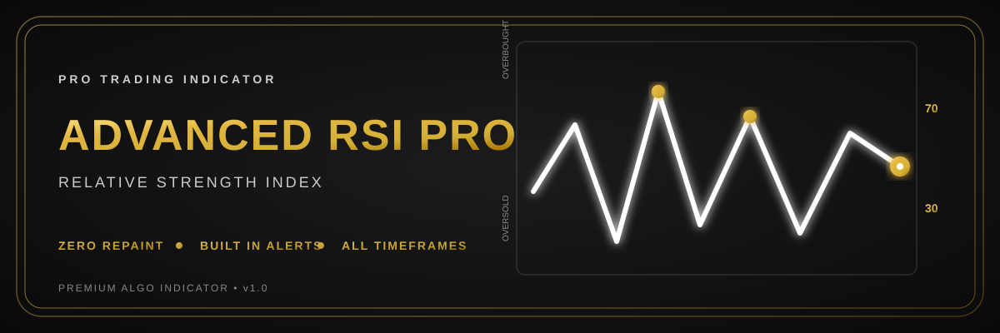
RUNNING → TP1 HIT → TP2 HIT | STOPPED | STALE); RSI momentum trendlines are drawn
through the oscillator’s own confirmed pivots and announce their breaks before price does; thin
session markers put UTC context on the price chart; and a CSV signal journal writes every live
signal, plan event and measured verdict to the log (§13–§16). It places no orders, reads no
account data and asks for no permissions.
- Correct OB/OS polarity. Exiting the oversold zone now produces the bullish trigger and exiting overbought the bearish one — markers, trigger outputs and alerts all follow (§8).
- Fully implemented dynamic levels. The OB/OS bands breathe with volatility (ATR% versus its own long-run baseline) and every zone-dependent feature reads the same live bands (§5.6).
- Trade management (group 12). A projection engine turns every registered divergence into an explicit
plan —
Entry / SL / TP1 / TP2drawn as labelled levels on the price chart — with a managed lifecycle on closed source bars only, break-even and chandelier-trailing hints, plan-level alerts and anARP-PLANjournal line per event (§13). - RSI momentum trendlines (group 13). Automatic support / resistance lines through the confirmed RSI pivots’ own readings, slope cap and break threshold in RSI points per bar, strictly non-repainting break detection, break markers, an alert family and two panel rows (§14).
- Session markers (group 14). Thin UTC verticals on the price chart — occurrence-complete even inside Weekly and Monthly bars, rolling window, hard object cap, zero interaction with signal logic (§15).
- The CSV signal journal. Three id-keyed streams in the platform log —
ARP-JOURNAL,ARP-PLAN,ARP-OUTCOME— history-gated, invariant-culture, Excel-ready (§16). - Professional statistics. The panel shows expectancy (R), profit factor, average MFE/MAE in ATR units and per-family win rates — real trading metrics measured on your own feed (§7, §29).
- Four trading styles. Universal, Scalping, Swing and Position; each preset pins the complete surface it consumes — 134 of the 164 parameters — so one style resolves identically whatever template it was saved into (§4, §32).
- Six price inputs. Close, Typical, Weighted, Median, Heikin-Ashi and Volume-Price-Adjusted feeds for the RSI engine, each documented with its own screenshot (§5.2, §23).
- v3.24.6 / v3.24.7 history catch-up gate. The start-up rescan stays silent even when the platform streams the history in incrementally: the first pass now completes only once the source series has actually caught up to the clock, so a deep-chart attach can no longer leak a month of alerts, journal lines and sounds into the log (§11.3, §16.1).
- v3.24.5 marker placement. Closed-bar cross markers and trendline-break markers now sit on the last chart bar overlapping the confirmed source bar (the bar that was live at the knowledge point). On charts finer than the source (e.g. a custom H8 source on H4) they no longer pop up hours in the past at the open edge of the signal bar; identity and finer-source charts are bit-identical (§8.2, §26.1).
- Fourteen independent audit rounds. Every kernel, mapping, gate, score and lifecycle routine has been
re-verified against independently written oracles, including a whole-file compile against the published
cAlgo.APIsurface (Appendix B).
Adaptation Mode = Automatic (the default, and the
mode every style preset forces) the engine feeds them into the scaling law of §3 and uses the resolved
value — which is what the panel, the log and every gate actually work with. Editing a reference parameter
therefore shifts the whole resolved profile rather than setting one number; in Manual mode the same
field is used verbatim (clamped to its declared range). The resolved values are printed at start-up when
Log Resolved Profile On Start is on (§18) and shown live in the panel’s configuration
section (§10). When in doubt: pick a style (§4), leave the references alone, and tune only the
user-owned parameters listed in §32.7.
SECTION 1 — FEATURES
1. Introduction & Philosophy
1.1 The problem with a naked RSI
Wilder’s Relative Strength Index is one of the most studied oscillators in existence, and one of the most misused. Out of the box it has three failure modes that every trader eventually meets:
- It is timeframe-blind. A 14-period RSI on M1 averages 14 minutes of flow; on D1 it averages three trading weeks. The same number on the dial means two completely different markets, yet every textbook rule (“fade 70/30”) is written as if the dial meant one thing.
- Its zones are static. 70/30 was calibrated on 1970s daily commodities. In a volatile regime the oscillator parks above 70 for days (a trending market, not an “overbought” one); in a quiet regime it never reaches the zones at all, so the rules never fire.
- Its signals are unmeasured. A divergence either “looks good” or it does not. Nothing tells you, after a hundred of them on your instrument and your broker’s feed, whether they have been worth acting on — so confidence is a matter of mood.
Advanced RSI Pro attacks all three. The first with a scaling law that resolves every window from the actual bar duration (§3); the second with volatility-adaptive zones that breathe with the market’s own ATR% (§5.6); the third with a quality score for every divergence (§6.6) and an adaptive learner that keeps score of every signal after the fact (§7).
1.2 Design philosophy
- The classic reading stays available. With
Adaptation Mode = Manual,Dynamic Levelsoff,Regime-Adaptive Filter Bankoff andSignal Sensitivity Lambda = 1.00, the main line is textbook Wilder RSI, computed on the raw close, with a simple-moving-average signal line. Nothing is hidden behind the adaptive machinery — you can always get back to the oscillator you already know. - One truth per number. Every zone-dependent feature — cross markers, divergence zone checks, MTF state scoring, the panel — reads the same live band buffers that are drawn on the pane. There is no second, private 70/30 anywhere in the engine.
- Non-repainting by construction. Pivots are confirmed only after
Pivot Lookbackfurther bars have closed; divergences, plans, trendline breaks and (by default) cross markers are all resolved from closed source bars. A glyph that appears on your chart never moves, never disappears and never changes its meaning afterwards (§2.2, §35). - Missing data never blocks and never invents. Every gate family treats an unavailable reading (warm-up, a missing volume feed, a corrupt quote) as unknown: the term is excluded from scores instead of being replaced by a constant, and a non-finite quote is skipped rather than allowed to fabricate a signal (Appendix B).
- Measure yourself. The learning engine and the CSV journal exist so that the tool’s own claims can be audited on your feed, in your session, with your settings — not taken on faith (§7, §16, §29).
1.3 What the indicator is — and is not
AccessRights.None. A “BUY” marker is an annotation of a measured condition, not an
instruction. Trading involves substantial risk of loss; nothing in this manual is investment advice.
2. Architecture & Guarantees
2.1 Module map
The indicator is a single cAlgo Indicator (oscillator, non-overlay, UTC timezone) composed of thirteen
source parts. Conceptually it is a pipeline of independent engines, each with one job:
| Engine | Responsibility | Section |
|---|---|---|
| Adaptive profile builder | Resolves every window / threshold from the bar duration and the style preset (the “scaling law”). | §3 |
| RSI pipeline | Price input → gains/losses → Wilder fast (and optional slow) legs → regime blend → SuperSmoother → signal SMA → StochRSI → ATR% → dynamic bands → zone / midline / signal-line state machines. One instance per timeframe (primary + each confluence rung). | §5 |
| Pivot scanner | Strict-extremum fractal pivots on the RSI line with a prominence gate; watermark-driven, exactly-once confirmation. | §6.2 |
| Divergence detector | Pairs pivots into regular / hidden divergences, grades them A/B/C, ranks candidates, runs the hard gates, computes the quality score, registers records. | §6 |
| Outcome & learning engine | Resolves every registered signal as WIN / LOSS / EXPIRED against the ATR ruler, tracks MFE/MAE, maintains four decayed learning buckets, persists them to LocalStorage. | §7 |
| Crossover engine | OB/OS-exit, midline and signal-line crosses with lambda hysteresis; markers, trigger outputs, per-bar de-duplication. | §8 |
| MTF confluence ladder | Builds 1–3 higher-timeframe rungs, each with its own resolved profile and pipeline; weighted state score in [−100..100]. | §9 |
| Projection engine | Entry / SL / TP1 / TP2 plans per divergence, lifecycle state machine, break-even and chandelier hints, visible-plan budget. | §13 |
| Trendline engine | Support / resistance lines through confirmed RSI pivots, slope cap, non-repainting break detection and markers. | §14 |
| Session markers | UTC verticals on the price chart; pure context. | §15 |
| Alert engine | Six alert families, watermark scans, ratio-scaled freshness, per-direction cooldown, sounds / popups / log. | §11 |
| Info panel | Five sections (config, market, MTF, signals, statistics) in four layouts, native controls or static text. | §10 |
| Journal | Three CSV streams to the platform log: ARP-JOURNAL, ARP-PLAN, ARP-OUTCOME. | §16 |
2.2 The guarantees
These are the properties the engine is built to hold. Each is testable; §35 shows how to test the first one yourself.
| Guarantee | Meaning |
|---|---|
| Non-repainting signals | A divergence, plan, trendline break or (closed-bar) cross marker is resolved from closed source bars only and is never modified afterwards. Pivots confirm Pivot Lookback bars after the extreme, so the earliest a divergence can appear is that confirmation bar — it will not appear “earlier” in hindsight. |
| No look-ahead in MTF reads | Higher-timeframe rungs are read as of the source bar’s close, capped by the successor bar’s open on irregular calendars (hybrid closure). A Monthly rung never leaks March data into a February decision. |
| One evaluation per event | Watermark-driven scanners evaluate each closed source bar exactly once per side, even across disconnects, restarts and reloads; triggers, markers, alerts and journal lines cannot duplicate an event. |
| Missing data is neutral | Warm-up or absent readings (StochRSI, volume, market hours) are excluded from scores rather than substituted; a gate with no reading never blocks a signal. |
| Corrupt quotes cannot fabricate | Non-finite quotes (NaN / ±Infinity) are sanitised at ingestion and skipped in every decision-sensitive scan: they can neither create a signal, an outcome, a plan event nor an alert, nor silently invert one. |
| No permissions | AccessRights.None: no file system, no network, no account data. The only persistence is the learning state in cTrader LocalStorage (scope: indicator type), and only if you leave Persist Learning on. |
| Deterministic presets | Selecting a Trading Style pins all 134 parameters the style consumes, on their declared step grids — two charts on the same style resolve identically regardless of the template they were saved into. |
2.3 Timeframe mapping: the four families
Whenever the engine translates between the chart’s bars and the source (or a rung’s) bars it uses one of
four mapping families, all built on the same hybrid-closure rule: a bar counts as closed at time
asOf iff min(nominal close, successor open) ≤ asOf. On regular calendars this is exactly
the nominal close; on irregular ones (Monthly bars, holiday-shortened days, weekend gaps) the successor’s open
proves the bar closed earlier than its nominal span claims, which is what kills look-ahead.
MapChartToSource— chart bar → the source bar that contains it (used for marker placement and trigger outputs).MapByCloseTime— used when the source is finer than the chart, so several source bars close inside one chart bar.SourceToChartIndex— source bar → the chart bar to draw on.MapToClosedIndex— the highest closed index of a rung as of a source bar’s close; honoursStrict Non-Repaint MTF Mapping(never returns the still-forming last bar).
Strict Non-Repaint MTF Mapping = Yes (default) a rung’s in-progress bar is never read: the
ladder sees each higher timeframe exactly as it stood when your source bar closed. Switching it off lets the last
(still forming) rung bar contribute, which is one tick fresher and one tick less honest — the panel will show
it, but the recorded, journaled and alerted values stay closed-bar based.
3. Timeframe Resolution & the Adaptive Engine
3.1 What gets resolved, and when
At start-up (and whenever history length changes materially) the engine measures the source timeframe’s real bar span — exactly, from the timeframe name for named periods; as the sampled median of recent bar deltas for name-less ones (Tick / Renko / Range) — and builds an AdaptiveProfile: the complete set of effective windows and thresholds. Every confluence rung gets its own profile, resolved from its own bar span, which is why a Weekly rung behaves like a Weekly indicator even though you never configured one.
3.2 The scaling law
With d = bar minutes, ε = Microstructure Noise Horizon (min) and
e = the scaling exponent of Timeframe Scaling:
Each window then scales as round(reference · scale^k · gain) with its own exponent
k and clamp range, and gain = 1 / Global Sensitivity (a higher sensitivity shortens the
RSI-family windows). The exponents are deliberately unequal:
| Resolved quantity | Exponent k | Clamp range | Why |
|---|---|---|---|
| RSI Period, Signal Period, Stoch Period, SuperSmoother | 0.30 | 5–200 / 3–100 / 5–100 / 3–100 | Wilder’s 14 is already robust across timeframes; aggressive rescaling would betray the classic reading. |
| Pivot Lookback | 0.60 | 2–30 | Fractal confirmation needs proportionally more bars on fine timeframes. |
| Min / Max Pivot Distance, Trendline Min Gap | 0.50 | 3–200 / 20–2000 / 3–300 | Pattern length scales with the square root of the time compression. |
| ATR Period, Efficiency Ratio Period | 0.40 | 4–60 / 4–40 | Volatility and efficiency estimates need a stable sample. |
| Trend EMA Period | 0.80 | 10–400 | The trend filter must describe the same span of time on every timeframe. |
| Trend Slope Bars, Outcome Horizon, Level Baseline, Stats Window, Draw Window | 0.50 | 2–40 / 10–1000 / 20–1000 / 25–2000 / 100–100000 | Half-life compromise between bar-count and clock-time. |
| Min ATR % (fixed gate) | value × (d/60)^0.5 | 0–5 | A volatility floor quoted in % of price shrinks on finer bars. |
After scaling, calendar ceilings bound the coarse end: Trend EMA ≤ 730 days of bars, Max Pivot Distance ≤ 730 d,
Min Pivot Distance and Trendline Min Gap ≤ 180 d, Outcome Horizon ≤ 120 d, Stats Window ≤ 365 d,
Draw Window ≤ 1095 d. Final normalisations keep the profile self-consistent: band width ≥ 15 points,
MinPivotDistance ≥ 2 × PivotLookback, MaxPivotDistance > MinPivotDistance,
WeakQuality ≥ MinQuality, AlertQuality ≥ MinQuality,
ErSmoothing = 2 × ErPeriod (clamped 5–100), and a 10-day volatility window in
[150–3000] bars.
3.3 Zone bias and quality bias
Two small logarithmic biases keep the zones and the gates honest across timeframes:
On H1 both biases are exactly zero — the reference timeframe is untouched. On M1 the zones widen by at most ±0.5 points and the quality floor rises by at most 10 %, which is the engine’s way of saying “fine-timeframe noise needs a slightly higher bar to be called a signal”.
3.4 Manual mode
Adaptation Mode = Manual bypasses the scaling law entirely: every reference parameter is used verbatim
(clamped to its declared min/max), on every timeframe. Use it when you want the literal textbook configuration
(RSI 14 / signal 9 / 70-30) on one specific timeframe and accept that the same numbers mean something different if
you switch the chart period. The panel’s TF cell shows “manual” in that case.
3.5 The noise horizon
Microstructure Noise Horizon (min) (ε) models the idea that each bar carries a fixed slice of
pure microstructure noise (spreads, auction gaps, quote granularity). With ε = 0 the scale reduces to the pure
horizon ratio; raising ε increases the scale on fine timeframes (longer windows there) because a larger share
of each M1 bar is noise. The default 1.0 minute is a conservative FX/crypto value; leave it unless you know your
instrument’s noise floor.
4. Trading Styles
4.1 The four styles at a glance
The Trading Style parameter (group 0) is the only parameter that is never scaled: it selects a preset
that pins 134 of the 164 parameters. Universal is the neutral default — it changes nothing and
leaves every field as saved. The other three are complete, reproducible configurations:
| Style | Scaling / HTF policy | Character | Typical home |
|---|---|---|---|
| Universal | as saved (default Balanced / Canonical) | Neutral baseline; everything user-owned. | Any |
| Scalping | BarCount / HorizonMatched, sensitivity 1.3 | Fast, tight zones (68/32), live-bar markers, both cross families, session filter on, short plans (0.8R / 1.5R), 200-outcome memory. | M1–M5 |
| Swing | Balanced / Canonical, sensitivity 1.0 | The classic reading (14/9/70/30) with closed-bar confirmation everywhere; 1R / 2R plans; 3-bar alert cooldown. | M30–H4 |
| Position | TimeHorizon / HorizonMatched, sensitivity 0.85 | Slow and strict: regular divergences only, hard MTF gate, 3-rung ladder, wide zones (75/25), 1.5R / 3R plans, no cross markers, no session markers. | D1–W1 |
4.2 What the presets pin (and what stays yours)
Each preset writes the identical 135-assignment set (134 parameters plus the internal style name): the adaptation and scaling policy, the MTF ladder shape and gate, the price input and display toggles, the divergence gates and confirmations, every signal filter, the learning configuration, the cross-marker policy, the trade-plan geometry, the trendline and session-marker policy, the panel layout and the alert toggles — and, since v3.16, also all scaling references (RSI / signal / stoch / smoother periods, bands, pivot windows, ATR / trend / outcome windows, draw and stats windows…) so the resolved profile is reproducible.
The residue — 29 parameters plus the style itself — stays user-owned in every style: the source timeframe choice, every colour (signals, divergences, panel palette, plan levels, trendlines, session markers), marker font, icons, line style and z-index, the two alert sounds, the two diagnostic toggles and the session-marker times / window. The full list is in §32.7.
Universal, the fields keep the last style’s values — Universal
does not restore your old numbers. Note your configuration (or keep a cTrader template per style) before
experimenting.
5. The RSI Core
5.1 Pipeline overview
5.2 The six price inputs
RSI Price Input chooses the series the engine measures momentum on. All six are sanitised bar-by-bar
(a non-finite component falls back to the close, and an infinite close reads as NaN — never as a number):
| Input | Formula | Character |
|---|---|---|
| Close (default) | C | The classic. Every textbook RSI reading, every audit oracle and the learning statistics assume this unless you say otherwise. |
| Typical | (H+L+C)/3 | Includes the intrabar range; slightly less whippy on spike-and-reject bars. |
| Weighted | (H+L+2C)/4 | Typical with double weight on the close — between Close and Typical. |
| Median | (H+L)/2 | Ignore the close entirely; the pure mid-of-range read. Most sensitive to intrabar extremes. |
| Heikin-Ashi | (O+H+L+C)/4 (the HA close); if the source series is already a Heikin-Ashi timeframe, its close is used as-is | Averaged candles: trends read cleaner, reversals arrive later. |
| Volume-Price-Adjusted | volume-×-volatility weighted mean of closes over the stats window | Each bar’s close enters with weight volume · clamp(σk/σ̄, 0.25, 4) where σ = range/close. High-volume, wide-range bars dominate the reference price — an institutional-footprint flavour of RSI. |
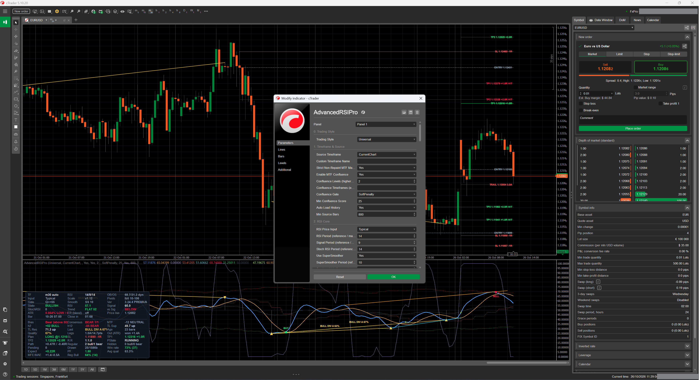
RSI Price Input = Typical: the dialog shows the
selected input and the oscillator re-resolves around the (H+L+C)/3 series. Compare Figs. 23.1–23.5.5.3 Wilder legs and the regime-adaptive filter bank
The gain/loss averages use Wilder’s recursion (seed = the first full-window SMA, then
avg += (x - avg)/P). With Regime-Adaptive Filter Bank = No (default, and default in every
preset) there is a single leg at the resolved RSI Period — the classic computation.
With the bank on, a second, slower leg (period × (1+spread)) and a faster leg (period × (1−spread))
are blended by the smoothed Kaufman Efficiency Ratio of the raw close: trending bars (ER→1) trust the fast leg,
choppy bars (ER→0) the slow one. Filter Bank Spread sets the leg separation (0.35 → fast = 0.65P,
slow = 1.35P). An unavailable ER reads as w = 0.5 (neutral), never as a fabricated regime.
5.4 SuperSmoother
Use SuperSmoother (default on) passes the blended RSI through Ehlers’ two-pole super smoother at
SuperSmoother Period, clamped to [0..100]. It removes most of the one-bar grit of fine timeframes while
keeping far less lag than an SMA of the same period. With it off, the main line is exactly the (blended) Wilder RSI.
During warm-up, before the smoother has two bars of history, the unsmoothed value is passed through, so the line
never starts empty.
5.5 Signal line and StochRSI
- Signal = simple moving average of the final RSI over the resolved Signal Period. It is the
“trigger line” of the MACD-style cross family (§8) and a momentum vote in the MTF state score
(§9.3). Display toggle:
Show Signal Line. - StochRSI = the position of the current RSI inside its own high/low range over the resolved Stoch Period,
in 0–100. A flat range (width < 1e-9) resolves to 50 rather than dividing by zero. It serves as a
divergence confirmation vote (§6.5) and a fast early-warning line. Display toggle:
Show Stoch RSI Line.
5.6 Dynamic OB/OS levels (ATR)
With Dynamic Levels (ATR) on (default), the overbought / oversold bands are not constants: they breathe
with realised volatility. The engine compares the bar’s ATR% of price with its own long-run baseline
(Volatility Baseline (bars)):
Hot regimes push the bands outward (a trending, volatile market must reach further to be called “over”);
quiet regimes pull them inward so the zones remain reachable. At zero stretch the dynamic bands are bit-identical to
the static ones for every configuration, and the dotted Overbought / Oversold output series
show exactly the bands every consumer reads. The panel reports them live (e.g. 68.8/31.2 dyn).
Level Adjustment Factor scales the breathing (0 = static behaviour with dynamic plumbing; the presets use
1.5–3.0).
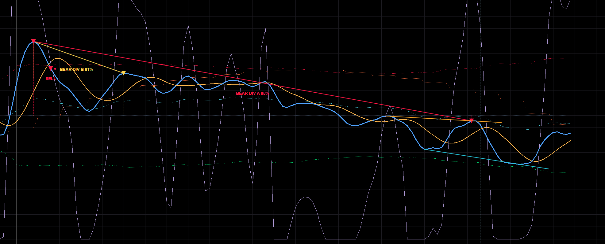
5.7 Zone, midline and signal-line state machines
Three binary state buffers underlie every cross in the engine, all computed per closed bar:
- In-OB / In-OS with lambda hysteresis: the zone is entered at the band itself and left only
band = (1 - lambda) · (OB - OS) · 0.10points through the band.Signal Sensitivity Lambda = 1.00is the classic exact-level cross; 0.92 (Scalping) demands a 0.32-point confirmed exit on 70/30 bands — enough to discard most border whipsaws at the cost of a slightly later trigger. - Signal-line side: sign(RSI − signal), sticky at exact equality.
- Midline side: sign(RSI − 50), sticky at exact equality.
5.8 Output scale
Output Scale = Raw plots the oscillator in classic 0–100. Centered subtracts 50, so the
pane reads −50..+50 with the midline at zero — convenient when you stack it under other centred
oscillators. Every drawn object, tooltip and trigger output follows the chosen scale (the panel and alert messages
deliberately keep quoting raw 0–100 readings as event records). The higher-TF RSI line is plotted in the primary
line’s display units in both modes.
5.9 The higher-TF RSI line and the trend-bias line
- RSI Higher TF (dotted orange): the first confluence rung’s RSI, strict-mapped to closed rung bars
and plotted in the primary display units — a permanent window into “what would the RSI say one
timeframe up?” Toggle:
Show Higher-TF RSI Line. - Trend Bias (dotted cyan):
50 + clamp(trend slope, ±1) ·50— the trend filter’s slope (§27.2) mapped onto the oscillator scale, so you can see the gate that accepts or rejects counter-trend divergences. Toggle:Show Trend Bias Line.
6. The Divergence Engine
6.1 What a divergence is, in this engine
A divergence is a disagreement between the price extreme and the RSI extreme of two confirmed pivots of the same side. Four classes are recognised (Brown/Cardwell family):
| Class | Price | RSI | Reads as | Default colour |
|---|---|---|---|---|
| Regular bullish | lower low | higher low | downward momentum exhausting — reversal up | #00E676 |
| Regular bearish | higher high | lower high | upward momentum exhausting — reversal down | #FF1744 |
| Hidden bullish | higher low | lower low | pullback in an up-flow — continuation up | #00BFA5 |
| Hidden bearish | lower high | higher high | retracement in a down-flow — continuation down | #FF6E40 |
Divergence Kinds selects which families the detector considers (Regular only / Hidden only / both).
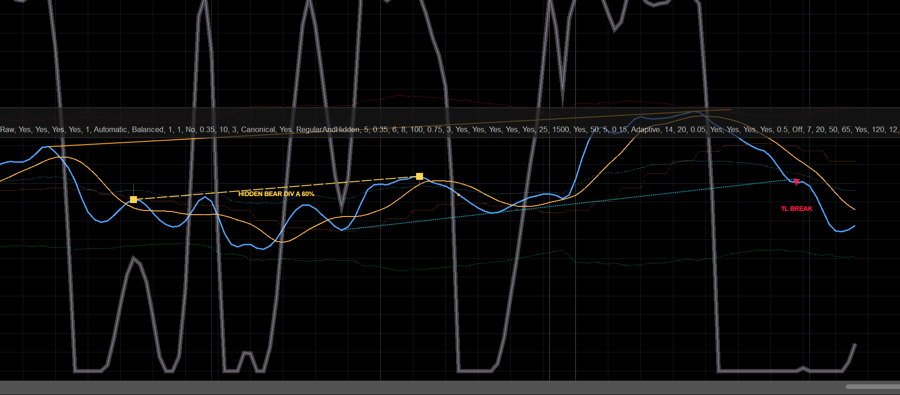
6.2 Pivots: the atoms of every pattern
A pivot is a strict fractal extremum of the RSI line itself (not of price): bar c is a high pivot
if its RSI is strictly greater than the RSI of the Pivot Lookback bars on each side (ties tolerated on
one side only — at least one strictly lower neighbour per side is required). A pivot confirms at bar
c + Pivot Lookback: that is the first bar at which the fractal condition can be known, and the first bar
at which the engine is allowed to act on it. Nothing is ever drawn or registered earlier.
Each pivot carries a prominence: how far its RSI stands out from the stronger of its two neighbours’
extremes, converted to ATR units of price ((prominence/100) / (ATR/close)). Pivots below
Pivot Prominence (x ATR) are noise and never enter a pool. The pools keep the most recent
MaxPivotDistance + 2·lookback + 16 (minimum 400) pivots per side.
6.3 Pairing, legs and zones
When a new pivot confirms, the detector walks the same-side pool from newest to oldest, keeping pairs whose distance
lies in [Min Pivot Distance .. Max Pivot Distance] bars, evaluating at most Max Pivot Candidates
pairs and keeping the best-ranked one. A pair survives only if:
- the price leg is at least
Min Price Leg (x ATR)ATR long — a divergence on a flat price leg is a rounding artefact; - the RSI leg is at least
Min RSI Leg (points)points long; - with
Require Extreme Zoneon: for regular classes at least one of the two pivots reached beyond the live band (with a ±5-point tolerance); for hidden classes the pair must not sit entirely in the opposite extreme zone (a “hidden bull” with both pivots above the overbought band is a contradiction).
6.4 Grading (A / B / C)
The grade measures how “complete” the swing between the pivots was, using the intermediate RSI extreme between them:
| Grade | Bullish (intermediate RSI high) | Bearish (intermediate RSI low) | Meaning |
|---|---|---|---|
| A | ≥ 50 | ≤ 50 | The counter-swing crossed the midline — a full impulse between the pivots. |
| B | ≥ 40 | ≤ 60 | The counter-swing approached the midline. |
| C | < 40 | > 60 | The two pivots sit in one continuous excursion — weakest structure. |
Grades feed both the ranking score and the quality score, and can be shown in the label
(Show Grade (A/B/C) In Label) and in the journal.
6.5 Confirmations (three independent votes)
| Vote | Parameter | Agrees when… | Unknown when… |
|---|---|---|---|
| Higher-TF RSI | Confirm With HTF RSI | bull: first-rung RSI in [35..70] (ideal 45); bear: in [30..65] (ideal 55) — i.e. the higher timeframe is not already exhausted in the trade’s direction | ladder off / rung warming up |
| StochRSI | Confirm With Stoch RSI | bull: pivot StochRSI < 30; bear: > 70 — the fast oscillator is stretched the same way | StochRSI in warm-up (kept NaN, never defaulted) |
| Volume | Confirm With Volume | bull: newer pivot’s bar volume > older’s; bear: < — effort confirms (or denies) the result | no volume feed / non-finite print |
An unknown vote is excluded from the score rather than scored as disagreement — a warm-up never punishes a pattern.
6.6 The quality score (0–100)
Every surviving candidate receives a weighted 0–100 score — a weighted mean of twelve components, unknown components dropping out with their weight (so the total always renormalises):
| Weight | Component | Full mark when… |
|---|---|---|
| 0.20 | RSI leg | leg ≥ 30 points |
| 0.10 | Price leg | leg ≥ 4 ATR |
| 0.10 | Pivot prominence | mean prominence ≥ 2 ATR |
| 0.08 | Distance fit | pivot distance in the 10–60 % band of [Min..Max Pivot Distance] |
| 0.08 | Zone depth | deepest pivot ≥ 15 points beyond its band |
| 0.12 | Grade | A = 1.0, B = 0.60, C = 0.30 |
| 0.10 | Trend alignment | slope aligned with the signal direction (hidden patterns use a 2× tighter ruler than regular ones) |
| 0.08 | HTF RSI vote | known & agreeing with full strength (agreeing-but-weak scores half) |
| 0.06 | StochRSI vote | known & agreeing (disagreeing scores 0.25) |
| 0.03 | Volume vote | known & agreeing (disagreeing scores 0.30) |
| 0.03 | MTF confluence | aligned ladder score well above the gate threshold (only when the gate is not Off) |
| 0.02 | Learned win rate | the family’s own measured win rate on your feed (§7) |
The score is compared with three thresholds, all resolved per timeframe: below Min Quality Score the
candidate is dropped (and, with Debug Log, the skip reason is printed); below
Weak Signal Threshold it is registered but drawn in the Weak Signal Color;
Alert Min Quality gates the divergence alert family (§11).
Avg qual, §29) — calibrate against that, not against this paragraph.
6.7 Registration, drawing and deduplication
A registered record stores everything: both pivots’ indices, times, prices and RSI readings, the confirmation
bar, quality, confluence snapshot, legs, entry price and ATR, and (from v3.0) the trade plan and its lifecycle.
Records are drawn as a line between the two pivots plus optional markers, drop lines and labels
(Draw Style, Show Drop Lines, Show Labels, wording and grade/quality toggles in
group 8), optionally mirrored onto the price chart (Mirror Divergences On Price Chart).
Two caps keep the pane readable: at most Max Drawn Divergences drawn records (newest win), and only
records whose end pivot lies within Draw Only Most Recent N Bars source bars (the window is re-enforced
continuously, not just at registration). A four-slot dedup watermark (side × class) prevents the same end pivot
from registering twice.
7. Outcomes & Adaptive Learning
7.1 The measurement contract
Every registered divergence is a forecast, and the engine grades every forecast afterwards on the ATR ruler:
entry = the close of the confirmation bar; then, bar by bar over Outcome Horizon (reference) source bars,
the excursion is tracked in units of the entry bar’s ATR:
- WIN — the favourable excursion reaches
Outcome Target (x ATR)first; - LOSS — the adverse excursion reaches
Outcome Stop (x ATR)first; if one bar touches both, the stop is assumed to fill first (the conservative same-bar rule, identical to the plan engine’s); - EXPIRED — neither level was touched within the horizon.
Along the way the engine records MFE (best favourable excursion) and MAE (worst adverse excursion) in ATR
units — the raw material of the panel’s Path and MFE/MAE cells.
Outcome Target / Stop) grades outcomes and feeds the statistics. The trade-plan
ruler (§13) draws levels as R-multiples of the plan’s own risk. They are independent by design
since v3.2; the panel labels the ATR ruler explicitly as Out (ATR).
7.2 The four learning buckets
Resolved outcomes accumulate in four buckets — regular-bull, hidden-bull, regular-bear, hidden-bear — so a
family that works on your feed lifts its own future quality scores (the 0.02 weight) and shows its own win rate in the
panel. Each bucket keeps Learning Memory (outcomes) resolved samples: when the cap is exceeded the win /
loss / expired counters are scaled down proportionally (exact double arithmetic — the v3.7 fix that removed the
rounding ratchet which used to drag saturated buckets to 50/50).
With Persist Learning (LocalStorage) on, the buckets survive restarts (saved at most every 5 seconds and
on shutdown, scope = indicator type). Corrupt or hand-edited storage is rejected field by field: non-finite literals,
negatives and oversized counters are discarded without poisoning the session. A restored state counts as
“seeded” only if it contains at least one win or loss — an all-expired file must not suppress the
new session’s own learning.
Min Learning Samples is the number of resolved outcomes a bucket needs before its win rate is allowed to
influence quality at all; below it the term is simply absent. Switching Adaptive Learning off freezes and
hides the whole layer (the panel shows collecting / off).
8. Crossover Signals & Markers
8.1 The three cross families and four modes
| Family | Trigger (bullish / bearish) | Classic meaning |
|---|---|---|
| OB/OS exit | RSI rises back out of the oversold zone / falls back out of the overbought zone (with lambda hysteresis) | “The turn is confirmed” — the reversal entry of the classic RSI playbook |
| Midline | RSI crosses 50 upward / downward | Regime flip: bulls take / lose the average |
| Signal line | RSI crosses its own SMA upward / downward | Momentum turn, MACD-style |
Cross Mode chooses which families the markers and trigger outputs watch:
OB/OS, Midline, SignalLine or OB/OS and Midline. Within one bar the
priority is OB/OS → midline → signal. The alert toggles are independent of the marker mode
(§11.2): “Alert: OB/OS or Midline Cross” always owns the first two families, “Alert: Signal-Line
Cross” the third.
8.2 Markers, triggers and the closed-bar rule
Marker Style: text + arrow / text only / arrow only / none.Marker Wordingchooses BUY/SELL, LONG/SHORT, TURN UP/DOWN or BULLISH/BEARISH (midline crosses always read ABOVE 50 / BELOW 50).Mark Only Closed Bars(default on): a marker is drawn only after its source bar has closed — non-repainting. It sits on the last chart bar overlapping that closed source bar: on an identity chart this is the signal bar itself (the classic convention); with a source coarser than the chart (e.g. a custom H8 source on H4) it is the sub-bar that was live at the moment of confirmation — never hours in the past at the source bar’s open (the v3.24.5 placement fix, case study in §26.1). The Scalping preset turns the closed-bar rule off for speed and accepts the intra-bar churn.- The Bull Trigger / Bear Trigger output series carry the trigger point at the RSI value of the cross bar in display units — these are the series to consume from a cBot or from cTrader’s alert-on-output facilities; they honour the same closed-bar rule and are de-duplicated per closed chart bar (first observer wins, so a finer source inside one chart bar cannot double-print).
Max Cross Markerscaps the drawn set; the trim window follows the divergence draw window.- Every marker carries a tooltip: direction, cross family, the bar’s MTF confluence score as of its own bar, RSI / signal / StochRSI in display units and the UTC bar time.
9. Multi-Timeframe Confluence Ladder
9.1 Building the ladder
With Enable MTF Confluence on, the engine stacks the primary source timeframe plus
Confluence Levels (1–3) higher rungs. Auto mode walks the standard ladder (M1, M2, M3, M5, M10, M15,
M30, H1, H2, H3, H4, H6, H12, D1, D2, D3, W1, MN) and picks the next timeframe at least 3.2× the current
bar span — a separation wide enough that rungs are genuinely independent votes. A rung that cannot be
materialised (unsupported period, no server data) consumes no slot: the ladder silently steps further up and the panel
shows only the rungs that exist. Confluence Timeframes accepts an explicit list
(e.g. H4, D1; comma / semicolon / space / pipe separated; M/H/D/W/MN shorthands, full words and Heikin
names accepted) and overrides the auto walk.
Each rung is a full pipeline of its own: its own resolved adaptive profile (its own bar span!), its own price
input (yours), its own dynamic bands — exactly as if you had opened that chart and dropped the indicator on it.
Rungs load enough history for their own windows (weekly trend EMAs included), which is why
Auto Load History / Min Source Bars matter.
9.2 The weighted score
The primary source always carries weight 2.0 — confluence informs, it does not overrule your chart. The panel
shows the score and a three-state verdict: ≥ +33 BULL, ≤ -33 BEAR, else
NEUTRAL, plus one cell per rung (e.g. H4 +51 BULL).
9.3 How one timeframe votes: the state score
Each rung’s state is a ±100 score built from four additive votes, computed against the rung’s own live bands:
The curve is continuous at every band border for any band placement, and at the classic 70/30 it reproduces the original anchors exactly (RSI 50 → 0, 70 rising → +65, 80 exhausted → +45…). The exhaustion vote is what makes the ladder useful in trends: a Weekly RSI parked at 78 votes less bullish than one at 65, because that is what “overbought” should mean in a confluence vote.
9.4 The three gate modes
Confluence Gate | Effect on divergences |
|---|---|
| Off | The ladder is computed and displayed (panel, higher-TF line) but injects nothing: no quality term, no filter. “Off” means off. |
| SoftPenalty (default) | The aligned ladder score (±score by signal direction) enters the quality score as a small 3 % term around the Min Confluence Score threshold — opposing flow dents quality, supporting flow lifts it; nothing is hard-rejected. |
| HardGate | Additionally rejects any divergence whose aligned score is below 2·MinConfluenceScore - 100 (e.g. Min 45 → aligned < −10 rejected). The Position style uses this. |
Independently, Hidden: MTF Alignment Gate always rejects hidden (continuation) divergences when the
aligned ladder score is ≤ −33 — the classic “hidden bear printed into a higher-timeframe
melt-up” trap.
9.5 The confluence-flip alert
The ladder’s three-state verdict (BULL / NEUTRAL / BEAR) is a first-class event: when it flips between bullish and bearish states the engine can alert (§11), evaluated on closed source bars only — a flip that exists only inside an in-progress bar never rings.
10. The Info Panel
10.1 Purpose and placement
The panel is the indicator’s instrument cluster: everything the engines currently believe, in one card on the
oscillator pane. It refreshes at Panel Refresh (ms) (only when something actually changed — the
engine dirties the panel on events, not on every tick) and can be built either from native cTrader chart controls
(Use Native Controls, crisp and themeable) or from a single static text block (lighter, and survives
platforms where controls misbehave).
Panel Layout: MergedCard (one card, all sections — default), SplitTopBottom (status card on top, signals card below), StatusCardOnly, SignalsCardOnly.Panel Side×Vertical Edge: any of Left / Center / Right × Top / Bottom;Panel Margin (px)insets it from the pane edge.- Colours and type:
Panel Background,Panel Border,Panel Text,Panel Label Text,Panel Font Size,Panel Opacity. - Sections:
Show Configuration / Market / MTF Confluence / Signals / Statistics Section— five independent toggles; the row allocator reflows the card for whatever remains, and a fully-empty selection hides the card body rather than drawing an empty frame.
10.2 Section anatomy
| Section | Cells (label → meaning) |
|---|---|
| Configuration | TF (resolved source + auto/manual), RSI (resolved period/signal/stoch), OB/OS (live bands, dyn suffix when dynamic), Input (price input), Scale (×period scale), Pivots (lookback and distance range), Q≥ (resolved min quality), Smooth (SuperSmoother period), Ver (engine version). |
| Market | State (BULLISH / BEARISH / FLAT from the primary state score), RSI / Signal / StochRSI live readings (display scale), Trend (slope direction + bias value), vs Sig (ABOVE / BELOW), ATR (ATR% with LOW / HIGH tag vs its baseline), ER (blend) (regime weight when the filter bank is on, else off), Session (OPEN / CLOSED vs the session filter), Price live, Bar (source bar open time), Close in (countdown to the source bar’s close). |
| MTF | MTF (signed score + BULL / BEAR / NEUTRAL), one cell per rung (label + signed score + state), TL Sup / TL Res (trendline value and up/down/broken state). |
| Signals | Bias (trend-filter vote with reason, e.g. “Bear (above 50)”), Consensus (momentum / trend / MTF vote tally, e.g. BEAR 1/1), Last (newest divergence in the draw window: class, grade, quality), Age (bars since its confirmation), Legs (price leg ATR / RSI leg points), Out (ATR) (its measured outcome on the ATR ruler), Plan / SL / TP1 / TP2 / R:R (the newest plan’s levels), PState (plan lifecycle state), Path (MFE / MAE in plan-R units). |
| Statistics | Regular / Hidden (bull/bear counts in the stats window), Pending (unresolved), Drawn (drawn records / window bars), Win rate (resolved wins, sample in brackets), Expect (expectancy in R), PF (profit factor), Avg qual (mean quality of the window), MFE/MAE (mean excursions in ATR), and one row per learning bucket (Reg Bull, Hid Bull, Reg Bear, Hid Bear win rates with samples). |
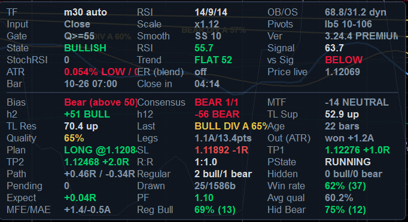
11. Alerts
11.1 Delivery channels
One engine, four channels, all optional: platform popup (Show Alert Popup), sound
(Play Sound with separate Bullish Sound / Bearish Sound), platform log
(Write Alerts To Log) and the indicator’s own journal-adjacent log lines. Enable Alerts
is the master switch.
11.2 The six families
| Family | Parameter | Default | Fires when… |
|---|---|---|---|
| OB/OS or midline cross | Alert: OB/OS or Midline Cross | on | either zone-exit or midline cross confirms (OB/OS wins inside a bar) — independent of Cross Mode |
| Signal-line cross | Alert: Signal-Line Cross | off | RSI crosses its SMA |
| Divergence | Alert: Divergence | on | a divergence registers with quality ≥ Alert Min Quality |
| MTF confluence flip | Alert: MTF Confluence Flip | off | the ladder’s BULL/BEAR verdict flips (closed bars only) |
| RSI trendline break | Alert: RSI Trendline Break | on | a confirmed close breaks a momentum trendline (§14) |
| Plan level reached | Alert: Plan Level Reached (TP/SL) | on | price touches TP1 / TP2 / SL of a live plan (TP1_HIT / TP2_HIT / STOP_HIT) |
11.3 Timing rules (why alerts never double-fire or vanish)
- Closed-bar gate.
Only On Closed Source Bar(default on) evaluates the cross families ats-1; divergence, plan-level and trendline alerts are closed-bar by construction. The Scalping preset relaxes this for crosses and alerts together with its live markers. - Watermark scans. Every elapsed closed source bar since the last evaluation is scanned (most recent win), so a source finer than the chart cannot hide a cross inside an hour.
- Ratio-scaled freshness. An event older than the freshness window —
max(8, 2 × source bars per chart bar)for cross alerts andmax(2, ratio)for record-keyed alerts (divergence, plan level, trendline break) — is treated as stale history and not announced (its marker and journal line still exist). After a weekend or a disconnect you get the state, not a flood of ancient rings. - Cooldown.
Alert Cooldown (source bars, 0 = off)spaces repeats per direction: a cooldown of 3 silences a second bullish cross within 3 source bars while a bearish one can still ring. - History gate. Nothing alerts during the start-up / reload history rescan — only live events ring. Since v3.24.6 the rescan counts as finished only when the feed has genuinely caught up to the clock (the last source bar opened within ~10 bar spans — a 15-minute floor for sub-minute sources — of real time, tightened from a 5-day floor in v3.24.7), so even a platform that streams the backlog in after the attach cannot leak historical events through as “live” ones.
12. Outputs & Programmatic Use
12.1 The twelve output series
| # | Name | Type / default colour | Content |
|---|---|---|---|
| 1 | RSI (Main) | line, #4FA3FF, w3 | the final adaptive RSI in display units |
| 2 | RSI Signal | line, #FFB74D, w2 | SMA of the main line |
| 3 | Stoch RSI | line, #B39DDB, w1 | 0–100 position inside the RSI’s own range |
| 4 | RSI Higher TF | dots, #FF7043 | first confluence rung’s RSI, strict-mapped, display units |
| 5 | Trend Bias | dots, #4DD0E1 | trend slope mapped to 0–100 |
| 6 | Overbought | dots, #FF1744 | live OB band (dynamic or static) |
| 7 | Oversold | dots, #00E676 | live OS band |
| 8 | Midline | dots, #3A4A5E | 50 (raw) / 0 (centered) |
| 9 | Bull Trigger | points, #00E676 | bullish cross trigger values (first-observer de-duplicated) |
| 10 | Bear Trigger | points, #FF1744 | bearish cross trigger values |
| 11 | Bull Divergence | points, #B2FF59 | registration point of each bullish divergence (display value at the confirm bar) |
| 12 | Bear Divergence | points, #FFAB40 | registration point of each bearish divergence |
12.2 Consuming the outputs from a cBot or another indicator
All twelve series are ordinary IndicatorDataSeries objects: read them by index on the chart
timeframe (trigger and divergence points are placed on the chart bar that first observed the closed source bar).
NaN means “no event / not warmed”. Because the trigger series are de-duplicated per closed chart bar, a
cBot that reacts to “non-NaN on the last closed bar” cannot double-enter on a finer source. Remember the
display-scale rule: with Output Scale = Centered, series 1–4 arrive shifted by −50.
Mark Only Closed Bars off (Scalping), the trigger outputs on the forming bar can still change
until the bar closes. A systematic consumer should either keep the closed-bar default or read index
Count-2.
13. Trade Management — the Projection Engine
13.1 What a plan is
Every registered divergence (not only the drawn ones) receives a full trade plan at its confirmation bar: an
ENTRY (the confirmation close), a STOP, and two targets TP1 / TP2 expressed as R-multiples of the
plan’s own risk. The plan is drawn on the price chart as four labelled horizontal levels spanning
Projection Length (chart bars), echoed in the panel, included in alerts and written to the journal. It is
a projection — a “if you acted on this signal, here is the coherent ruler” — never an
order.
13.2 Stop placement: two sources, one sanity band
- PivotStructure (default): the stop sits beyond the market structure that produced the signal — the
divergence’s extreme pivot (the lower of the two pivots’ prices for a bull, the higher for a bear)
plus
Pivot Stop Buffer (x ATR). If the structure lies on the wrong side of the entry or closer than 0.25 ATR, the ATR ruler takes over. - AtrMultiple: the stop is
Outcome Stop (x ATR)× entry ATR — exactly the ruler the learning engine grades outcomes with, so what you see is what the win rate describes.
Whichever source wins, the final risk is clamped to [0.5 .. 6] ATR of the entry — stops can never be
noise-tight on a violent instrument nor pattern-loose on a quiet one. Targets then follow:
TP1 = entry + Plan TP1 (R multiple) × risk, TP2 = entry + Plan TP2 (R multiple) × risk
(defaults 1R / 2R; the v3.2 geometry release made reward≥risk the default on purpose).
13.3 Drawing and the visible-plan budget
At most Max Visible Trade Plans plans are drawn at once (newest first; the registry itself keeps every
plan for its lifecycle and for the statistics). Labels (Show Projection Labels) read
ENTRY, SL -1R, TP1 +1.0R, TP2 +2.0R; colours come from
Entry Line Color / Stop Line Color and the signal direction’s colour for the targets.
A plan whose confirmation bar scrolls out of the chart window is removed and retried every extension pass, so
zooming back never loses it permanently.
13.4 The lifecycle state machine
- Evaluated on closed source bars only, strictly chronologically, from the bar after confirmation.
- Same-bar conservatism: if one bar can touch both the stop and a target, the stop is assumed to fill first (a LOSS / STOPPED) — identical to the outcome engine’s rule, so the two never disagree.
- A bar touching TP2 while still RUNNING credits TP1 on the same bar (conservative: the half-position that would have paid at TP1 is counted), then terminates as TP2 HIT.
- Reached levels turn dotted and carry suffixes:
TP1 +1.0R HIT,TP2 +2.0R VOID,SL -1R HIT,ENTRY ... STALE— a finished plan never masquerades as a live one. - Expiry: a plan that neither paid nor stopped within
4 × Outcome Horizonbars (clamped 50–4000) becomes STALE — the signal simply did not develop.
13.5 Management hints (break-even and chandelier trail)
With Show Break-Even & Trailing Hints on, a running plan grows two advisory levels:
- BE STOP — a dotted line at entry, starting at the TP1-hit bar: “once TP1 paid, the managed stop of the remainder belongs at entry”.
- TRAIL — a chandelier trail suggestion: the best closed source close since entry minus
Trailing Stop (x ATR chandelier)× ATR (mirrored above price for shorts), never worse than the original stop. Refreshed on closed bars only (the drawing records its freshness watermark).
The plan tooltip carries the standard management note: scale out at TP1, move the stop to break-even, trail the rest.
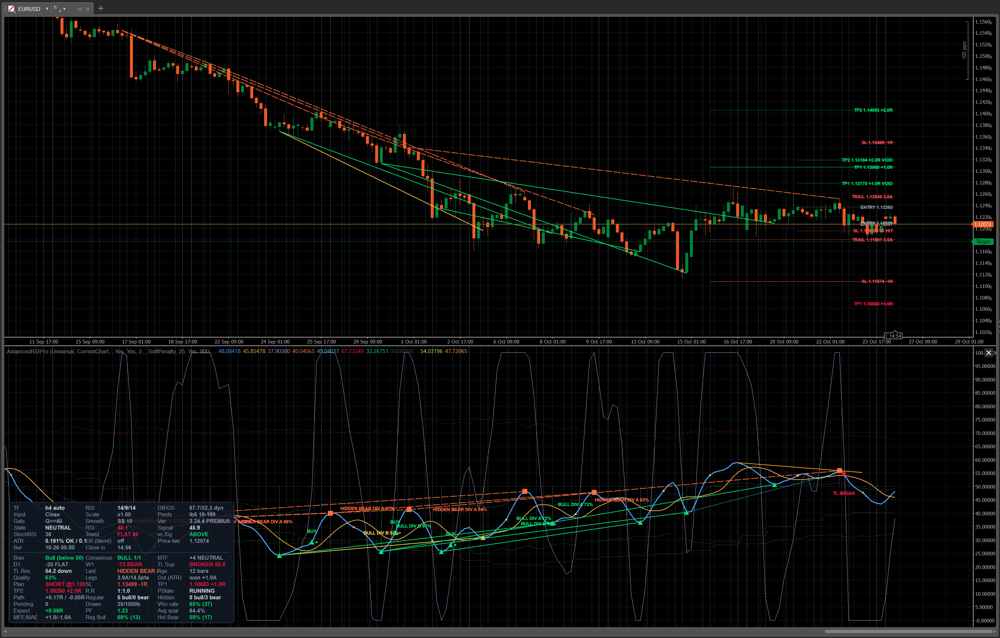
ENTRY, SL -1R,
TP1 +1.0R and TP2 +2.0R levels of a finished plan — reached levels dotted with
HIT / VOID suffixes (§13.4) — plus the chandelier TRAIL 3.0A
management hint (§13.5), an RSI trendline break marker and a divergence label.13.6 Path transparency
The panel’s Path cell shows the plan’s MFE / MAE in plan-R units
(e.g. +0.46R / -0.34R), so every HIT / VOID label on the chart is verifiable at a glance against how far
price actually travelled.
14. RSI Momentum Trendlines
14.1 What they are
Two automatic lines in the oscillator pane, drawn through the RSI readings of the same prominence-filtered, confirmed pivots that feed the divergence engine:
- Support — through the last two qualifying RSI low pivots; a confirmed source close
below it (by more than
Trendline Break ThresholdRSI points) is a bearish momentum break. - Resistance — through the last two qualifying RSI high pivots; a confirmed close above it is a bullish break.
Qualifying anchors respect Trendline Min Pivot Gap (minimum bars between the two pivots) and
Trendline Max Slope (RSI points per bar — a vertical line is not a trend, it is a spike). The engine
searches up to six candidate anchor pairs, re-anchors only when a strictly better pair confirms, extends the line to
the live bar every update, and detects breaks on closed source bars only — a break marker, once printed, is
final. Breaks produce: an on-pane marker (Show Trendline Break Markers), an alert family (§11), two
panel rows (TL Sup / TL Res with value and up/down/broken state) and
ARP-PLAN-adjacent log lines when debugging.
15. Session Markers
Thin vertical lines on the price chart at configurable UTC times — London and New York opens by default
(07:00,13:30). Pure context: they never interact with signals, gates or statistics.
Marker Times (UTC, HH:MM list): comma / semicolon / space separated; invalid tokens are ignored; the parsed set is sorted so markers inside one wide bar emit chronologically.- Occurrence-complete: inside a bar wider than the marker interval (a Daily bar containing both 07:00 and 13:30, a Weekly bar containing five of each) every occurrence is emitted, each with its own composite key (bar, occurrence, minute) — no collision, no drop, up to the hard cap of 1500 objects.
Marker Window (chart bars): a rolling window of closed chart bars; older markers are trimmed.- Drawn on closed chart bars only; a transient draw failure heals on the next reload (no retry storm).
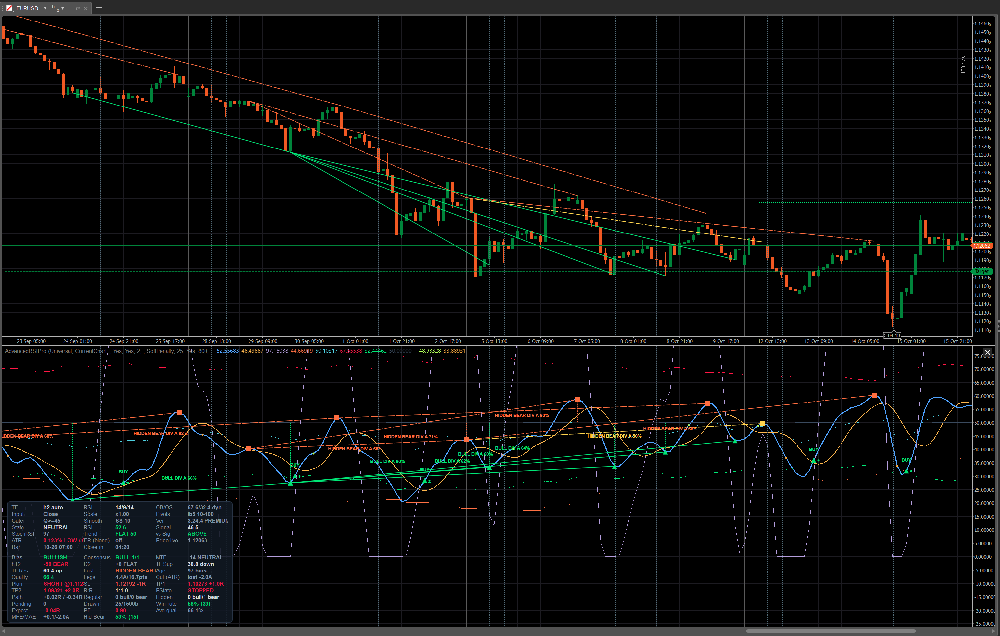
16. The CSV Signal Journal
16.1 Three streams, one join key
With Signal Journal (CSV lines to log) on (default), the platform log receives three semicolon-separated
streams. Every line is id-keyed, so a signal row joins to its plan events and its final outcome in Excel:
ARP-JOURNAL-HEADER;id;time;symbol;sourceTF;type;grade;quality;mtf;entry;sl;tp1;tp2;rr1;rr2;atrEntry;stopMode ARP-JOURNAL;17;2026-10-26 07:00;EURUSD;m30;REGULAR-BULL;A;65.2;-14;1.12080;1.11892;1.12276;1.12468;1.00;2.00;0.00052;structure ARP-PLAN;17;2026-10-26 07:00;EURUSD;TP1_HIT;2026-10-26 11:00;1.12276 ARP-OUTCOME;17;2026-10-26 07:00;EURUSD;REGULAR-BULL;WIN;1.42;-0.34
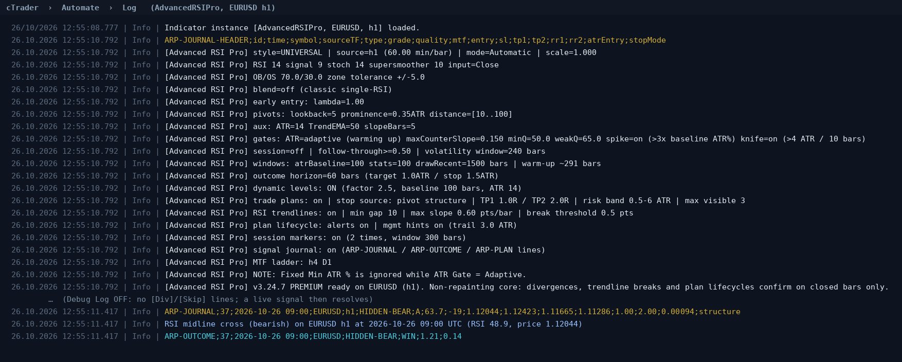
ARP-JOURNAL-HEADER, the complete resolved-profile dump (§18.1), then a single live signal
resolving into its id-keyed ARP-JOURNAL / ARP-OUTCOME rows with its alert twin — ready
to paste into Excel. Note the start-up rescan is silent: only today’s live signal journals, never the backlog
(§11.3). The [Div]/[Skip] trace lines appear only when Debug Log is on.- ARP-JOURNAL — one line per live registered divergence (history rescans stay silent —
and since v3.24.6/v3.24.7 the pass is only declared finished once the feed has caught up to the clock, so streamed
backlogs cannot flood the journal either): id,
confirmation time (UTC), symbol, resolved source TF, class, grade, quality, confluence snapshot, entry, the
plan’s SL/TP1/TP2 (or
-), both R-multiples, entry ATR and the stop source. - ARP-PLAN — one line per lifecycle event:
TP1_HIT / TP2_HIT / STOP_HIT / EXPIREDwith the event bar’s time and the touched price. - ARP-OUTCOME — one line per resolved outcome on the ATR ruler:
WIN / LOSS / EXPIREDplus MFE and MAE in ATR units (2 decimals).
All numbers are culture-invariant (dot decimal, no thousands separators), timestamps are
yyyy-MM-dd HH:mm UTC — paste the log lines into a .csv and Excel opens them cleanly.
16.2 What the journal is for
- Auditing the engine on your feed. Pivot the OUTCOME stream by class / grade / hour: that is your real edge measurement, independent of the panel.
- Reconciling the panel. Every
Win rate,PFandMFE/MAEcell is reproducible from the journal with two Excel formulas. - Building your own dataset. The JOURNAL row carries every feature the quality score used — a ready-made labelled dataset for external analysis.
17. Complete Parameter Reference — 164 Parameters, 15 Groups
Defaults below are the factory defaults (Universal style). Fields marked [ref] are scaling
references (§3): in Automatic mode the engine uses the resolved value, in Manual mode the literal one.
Fields marked [preset] are overwritten when you select Scalping / Swing / Position (§4).
Enum values are written as in the dialog.
17.1 Group 0 — Trading Style (1)
| Parameter | Default / range | What it does |
|---|---|---|
Trading Style | Universal · {Universal, Scalping, Swing, Position} | Selects the preset that pins 134 parameters (§4). Universal = neutral, changes nothing. Applied at initialisation; switching styles overwrites the pinned fields immediately. |
17.2 Group 1 — Timeframe & Source (10)
| Parameter | Default / range | What it does |
|---|---|---|
Source Timeframe [preset] | CurrentChart · {CurrentChart, M1…Monthly, Custom} | The timeframe the whole engine computes on. Anything but CurrentChart makes this an MTF indicator: the oscillator pane then shows the source timeframe’s RSI mapped onto your chart bars. |
Custom Timeframe Name | empty | Free-text timeframe when Source Timeframe = Custom: accepts M5, H4, D1, W1, MN, full words, Heikin names (HeikinAshiH4, HH4…), Renko/Range names, and current/chart. Unparseable input falls back to the chart timeframe with a start-up warning. |
Strict Non-Repaint MTF Mapping [preset] | Yes | Higher-timeframe reads use only closed rung bars (§2.3, §9). Off = the forming rung bar may contribute to live display values. |
Enable MTF Confluence [preset] | Yes | Master switch of the confluence ladder (§9): rungs, score, higher-TF line, gates and the HTF divergence vote. |
Confluence Levels (higher TFs) [preset] | 2 · 1–3 | How many higher rungs to stack above the primary source. Failed rungs consume no slot. |
Confluence Timeframes (empty = auto) [preset] | empty | Optional explicit rung list (e.g. H4, D1) overriding the 3.2× auto walk. |
Confluence Gate [preset] | SoftPenalty · {Off, SoftPenalty, HardGate} | How the ladder score filters divergences (§9.4): nothing / small quality term / hard rejection below the mapped threshold. |
Min Confluence Score [preset] | 25 · 0–100 | The 0–100 dial behind the gate: in HardGate it maps to aligned score ≥ 2·value−100; in SoftPenalty it centres the quality term. |
Auto Load History [preset] | Yes | Requests deeper history at start-up so every resolved window (yours and each rung’s) is warm before the first signal. |
Min Source Bars [preset] | 800 · 200–20000 | Minimum source history the engine asks for; a warning is logged if the feed cannot supply the resolved warm-up (§18). |
17.3 Group 2 — RSI Core (17)
| Parameter | Default / range | What it does |
|---|---|---|
RSI Price Input [preset] | Close · {Close, Typical, Weighted, Median, HeikinAshi, VolumePriceAdjusted} | The series the momentum is measured on (§5.2, gallery §23). |
RSI Period [ref][preset] | 14 · 2–200 | Wilder period of the fast leg (and of the only leg with the filter bank off). Reference for the scaling law in Automatic mode. |
Signal Period [ref][preset] | 9 · 2–100 | SMA length of the signal line. |
Stoch RSI Period [ref][preset] | 14 · 2–100 | Lookback of the StochRSI normalisation window. |
Use SuperSmoother [preset] | Yes | Passes the (blended) RSI through Ehlers’ two-pole super smoother (§5.4). |
SuperSmoother Period [ref][preset] | 10 · 2–100 | The smoother’s period — its cutoff wavelength in bars. |
Overbought [ref][preset] | 70 · 52–95 | Static OB level: the centre of the dynamic band and the Manual-mode band itself. |
Oversold [ref][preset] | 30 · 5–48 | Static OS level, same role. |
Dynamic Levels (ATR) [preset] | Yes | Lets the bands breathe with ATR% vs its baseline (§5.6). Off = fixed bands. |
Level Adjustment Factor [preset] | 2.5 · 0–10, step 0.1 | Gain of the breathing: 0 freezes the bands at their static values, higher values stretch them further in hot regimes. |
Volatility Baseline (bars) [ref][preset] | 100 · 20–1000 | SMA length of the ATR% baseline — “normal volatility for this instrument”. |
Output Scale [preset] | Raw · {Raw, Centered} | 0–100 versus −50..+50 display (§5.8). |
Show Signal Line [preset] | Yes | Draws output series 2. |
Show Stoch RSI Line [preset] | Yes | Draws output series 3 (and enables its computation). |
Show Higher-TF RSI Line [preset] | Yes | Draws output series 4 (requires the confluence ladder). |
Show Trend Bias Line [preset] | Yes | Draws output series 5 — the visible trend gate. |
Signal Sensitivity Lambda [preset] | 1.00 · 0.80–1.00, step 0.01 | OB/OS exit hysteresis (§5.7): 1.00 = classic exact-level cross; lower = the zone state clears only after RSI moves (1−λ)·(OB−OS)·0.1 points through the band, filtering border whipsaws. |
17.4 Group 3 — Automatic Adaptation (9)
| Parameter | Default / range | What it does |
|---|---|---|
Adaptation Mode | Automatic · {Automatic, Manual} | Scaling law on / off (§3). Every style preset forces Automatic. |
Timeframe Scaling [preset] | Balanced · {BarCount, Balanced, TimeHorizon} | The exponent e of the scaling law: 0 (pure bars), 0.15 (compromise), 1 (pure clock time). |
Global Sensitivity [preset] | 1.0 · 0.5–2.0, step 0.05 | gain = 1/sensitivity applied to the RSI-family windows: >1 = shorter, more reactive windows; <1 = longer, calmer ones. |
Microstructure Noise Horizon (min) [preset] | 1.0 · 0–30, step 0.5 | ε of the scaling law (§3.5): the fixed noise slice per bar that makes fine-timeframe windows grow. |
Regime-Adaptive Filter Bank [preset] | No | Enables the ER-blended fast/slow Wilder legs (§5.3). Off = classic single RSI. |
Filter Bank Spread [preset] | 0.35 · 0–0.8, step 0.05 | Leg separation of the bank: fast = P·(1−s), slow = P·(1+s). |
Efficiency Ratio Period [ref][preset] | 10 · 3–60 | Kaufman ER lookback that drives the blend weight (smoothing = 2×period). |
Max Period Multiplier [preset] | 3.0 · 1–8, step 0.25 | Ceiling of the period scale: no resolved window may exceed reference·multiplier. |
High Timeframe Policy [preset] | Canonical · {Canonical, HorizonMatched} | Scale floor: Canonical never shrinks windows below the reference on coarse timeframes (floor 1.0); HorizonMatched allows down to 0.35 so coarse charts can track clock horizons. |
17.5 Group 4 — Divergence Detection (16)
| Parameter | Default / range | What it does |
|---|---|---|
Show Divergences | Yes | Master switch of the divergence engine (detection, drawing, plans, learning input). |
Divergence Kinds [preset] | RegularAndHidden · {RegularOnly, HiddenOnly, RegularAndHidden} | Which classes the detector considers (§6.1). |
Pivot Lookback [ref][preset] | 5 · 2–40 | Fractal arm length: bars on each side of a pivot, and the confirmation delay. Bigger = fewer, stronger, later pivots. |
Pivot Prominence (x ATR) [preset] | 0.35 · 0–5, step 0.05 | Minimum RSI prominence of a pivot in ATR-price units (§6.2). 0 admits every fractal. |
Max Pivot Candidates [preset] | 6 · 1–20 | How many older pivots are evaluated per new pivot (ranking keeps the best). |
Min Pivot Distance [ref][preset] | 8 · 3–120 | Minimum bars between the two pivots of a pattern. |
Max Pivot Distance [ref][preset] | 100 · 10–1000 | Maximum bars between them; beyond it the pair is a different story, not a pattern. |
Min Price Leg (x ATR) [preset] | 0.75 · 0–10, step 0.25 | Minimum price distance between the pivots in ATR units (§6.3). |
Min RSI Leg (points) [preset] | 3.0 · 0.5–30, step 0.5 | Minimum RSI distance between the pivots in points. |
Require Extreme Zone [preset] | Yes | Zone discipline: regular patterns need a pivot beyond the live band (±5 tolerance); hidden patterns must not sit wholly in the opposite extreme (§6.3). |
Confirm With HTF RSI [preset] | Yes | Enables the higher-TF vote (§6.5) in ranking and quality. |
Confirm With Stoch RSI [preset] | Yes | Enables the StochRSI vote. |
Confirm With Volume [preset] | Yes | Enables the tick-volume vote (ignored gracefully on volume-less feeds). |
Hidden: MTF Alignment Gate [preset] | Yes | Rejects hidden divergences when the aligned ladder score ≤ −33 (§9.4). |
Max Drawn Divergences [preset] | 25 · 1–200 | Draw cap (newest win). The registry keeps more for statistics and plans. |
Draw Only Most Recent N Bars [ref][preset] | 1500 · 50–100000 | Source-bar window inside which records are drawn; enforced continuously as the market advances. |
17.6 Group 5 — Signal Filters (18)
| Parameter | Default / range | What it does |
|---|---|---|
Use Trend Filter [preset] | Yes | Enables the slope gate and its quality/panel contributions (§27.2). |
Trend EMA Period [ref][preset] | 50 · 5–500 | EMA length whose slope defines the trend. |
Trend Slope Bars [ref][preset] | 5 · 1–60 | Bars over which the EMA slope is measured (also sizes the falling-knife window = 2×this, clamped 4–60). |
Max Counter-Trend Slope (ATR/bar) [preset] | 0.15 · 0.01–2, step 0.01 | The gate limit: hidden divergences are rejected when the trend runs against them faster than this; regular ones only at 3× this (“too strong to fade”). |
ATR Gate [preset] | Adaptive · {Adaptive, Fixed, Off} | Volatility floor policy (§27.1): adaptive percentile of the EWMA log-vol model, a fixed %, or none. |
ATR Period [ref][preset] | 14 · 2–100 | Wilder ATR used everywhere the engine needs “one unit of volatility” (prominence, legs, plans, outcomes). |
Adaptive ATR Percentile [preset] | 20 · 1–49, step 1 | Which percentile of the modelled ATR% distribution becomes the floor (lower = quieter markets still trade). |
Fixed Min ATR % (reference at H1) [ref][preset] | 0.05 · 0–5, step 0.005 | The floor value when ATR Gate = Fixed; scaled by (d/60)^0.5 in Automatic mode. |
Use Volatility Spike Filter [preset] | Yes | Rejects confirmations printed inside a >3× baseline ATR% shock (news bars). |
Use Momentum (falling knife) Filter [preset] | Yes | Rejects a bullish confirmation under a >4 ATR drop (or bearish under a >4 ATR surge) within the last 2×Trend Slope Bars. |
Use Cluster / Repeat Filter [preset] | Yes | Rejects a same-direction signal clustered within Min Pivot Distance bars and 1 ATR of price of a previous one — no triple-entry on one bottom. |
Require Post-Pivot Follow-Through [preset] | No | Optional gate: the confirmation close must sit at least Min Follow-Through of the way through the pivot-to-confirmation range in the signal’s direction. |
Min Follow-Through (0-1) [preset] | 0.5 · 0–1, step 0.05 | The ratio required when the gate above is on. |
Session Filter [preset] | Off · {Off, Auto, ManualUtc} | Restricts signals to trading hours: Auto uses the symbol’s market-hours calendar (falling back to the manual window), ManualUtc uses your UTC hour window. |
Manual Session Start (UTC hour) [preset] | 7 · 0–23 | Inclusive start hour of the manual window. |
Manual Session End (UTC hour, exclusive) [preset] | 20 · 0–24 | Exclusive end hour; start > end wraps through midnight; start = end means “all day”. |
Min Quality Score [preset] | 50 · 0–100 | Registration floor (§6.6). Below it the candidate is skipped (reason in Debug Log). |
Weak Signal Threshold [preset] | 65 · 0–100 | Below it (but above the floor) the divergence is drawn in the weak colour. |
17.7 Group 6 — Quality & Learning (7)
| Parameter | Default / range | What it does |
|---|---|---|
Adaptive Learning [preset] | Yes | Master switch of outcome measurement and the learning buckets (§7). |
Learning Memory (outcomes) [preset] | 120 · 10–2000 | Resolved samples kept per bucket (proportional decay beyond it); also bounds the Expired counter. |
Min Learning Samples [preset] | 12 · 1–500 | Resolved outcomes a bucket needs before its win rate may influence quality. |
Persist Learning (LocalStorage) [preset] | Yes | Save/restore the buckets across restarts (throttled 5 s, scope = indicator type). |
Outcome Horizon (reference) [ref][preset] | 60 · 5–1000 | Bars an outcome may take before EXPIRED; plan expiry uses 4× this. |
Outcome Target (x ATR) [preset] | 1.0 · 0.1–10, step 0.1 | Favourable excursion that counts a WIN on the ATR ruler. |
Outcome Stop (x ATR) [preset] | 1.5 · 0.1–10, step 0.1 | Adverse excursion that counts a LOSS; also the stop source when Stop Source = AtrMultiple. |
17.8 Group 7 — Signal Markers (9)
| Parameter | Default / range | What it does |
|---|---|---|
Show Cross Signals [preset] | Yes | Master switch of the crossover markers (trigger outputs are independent, §12). |
Cross Mode [preset] | ObOs · {ObOs, Midline, SignalLine, ObOsAndMidline} | Which cross families markers and triggers follow (§8.1). |
Marker Style [preset] | TextAndArrow · {TextAndArrow, TextOnly, ArrowOnly, None} | Glyph composition of a cross marker. |
Marker Wording | BuySell · {BuySell, LongShort, TurnUpDown, BullishBearish} | The words on the text glyph (midline crosses keep ABOVE/BELOW 50). |
Bullish Signal Color | #00E676 | Colour of bullish cross markers. |
Bearish Signal Color | #FF1744 | Colour of bearish cross markers. |
Marker Font Size | 9 · 6–22 | Font of the text glyph. |
Mark Only Closed Bars [preset] | Yes | Non-repainting marker placement (§8.2). Off = live-bar marking (Scalping). |
Max Cross Markers [preset] | 200 · 5–2000 | Draw cap for cross markers. |
17.9 Group 8 — Divergence Appearance (17)
| Parameter | Default / range | What it does |
|---|---|---|
Draw Style [preset] | LineAndMarkers · {LineOnly, MarkersOnly, LineAndMarkers} | Connector line between the pivots, pivot icons, or both. |
Mirror Divergences On Price Chart [preset] | No | Duplicates the pattern on the price pane (price pivots instead of RSI readings). |
Show Drop Lines [preset] | Yes | Thin verticals from each pivot to the pane edge for exact pivot reading. |
Show Labels [preset] | Yes | The text label at the pattern (“BULL DIV” ± grade ± quality). |
Label Wording [preset] | Plain · {Plain, Compact, Full} | Plain = BULL DIV; Compact = B/HB…; Full = REGULAR BULLISH DIVERGENCE… |
Show Grade (A/B/C) In Label [preset] | No | Appends the structure grade. |
Show Quality % In Label [preset] | Yes | Appends the quality score (e.g. BULL DIV A 65%). |
Regular Bullish Color | #00E676 | Line/marker/label colour of regular bulls. |
Regular Bearish Color | #FF1744 | Regular bears. |
Hidden Bullish Color | #00BFA5 | Hidden bulls. |
Hidden Bearish Color | #FF6E40 | Hidden bears. |
Weak Signal Color | #FFD54F | Any registered divergence whose quality is below the weak threshold. |
Line Thickness [preset] | 2 · 1–6 | Connector width. |
Line Style | Solid · {Solid, Dots, Dashes, …} | Connector dash pattern. |
Bullish Marker Icon | UpTriangle | Pivot icon shape for bullish patterns. |
Bearish Marker Icon | DownTriangle | Pivot icon shape for bearish patterns. |
Object Z-Index | 5 · 0–100 | Base stacking order of every drawn object (markers sit at base+1…+3). |
17.10 Group 9 — Info Panel (19)
| Parameter | Default / range | What it does |
|---|---|---|
Show Info Panel [preset] | Yes | Master switch of the panel. |
Panel Layout [preset] | MergedCard · {SplitTopBottom, MergedCard, StatusCardOnly, SignalsCardOnly} | Card composition (§10.1). |
Panel Side [preset] | Left · {Right, Left, Center} | Horizontal anchor. |
Vertical Edge [preset] | Bottom · {Top, Bottom} | Vertical anchor. |
Use Native Controls (else static text) [preset] | Yes | Native chart controls (crisp, themeable) versus one static text block (lighter). |
Panel Font Size [preset] | 11 · 7–22, step 0.5 | Type size. |
Panel Opacity [preset] | 0.90 · 0.10–1.0, step 0.05 | Background alpha. |
Panel Margin (px) [preset] | 8 · 0–60 | Inset from the pane edges. |
Panel Background | #111823 | Card fill. |
Panel Border | #2C3A4D | Card border. |
Panel Text | #E6EDF3 | Value colour. |
Panel Label Text | #8FA3B8 | Label colour. |
Show Configuration Section [preset] | Yes | Config block of the card (§10.2). |
Show Market Section [preset] | Yes | Market block. |
Show MTF Confluence Section [preset] | Yes | MTF block (score, rungs, trendlines). |
Show Signals Section [preset] | Yes | Signals block (bias, consensus, last divergence, plan). |
Show Statistics Section [preset] | Yes | Statistics block (counts, win rate, expectancy, buckets). |
Stats Window (bars, reference / manual) [ref][preset] | 100 · 25–2000 | Source-bar window of the panel statistics (and the volume-price input’s weighting window). |
Panel Refresh (ms) [preset] | 250 · 50–5000 | Minimum interval between panel rebuilds when dirty. |
17.11 Group 10 — Alerts (15)
| Parameter | Default / range | What it does |
|---|---|---|
Enable Alerts [preset] | Yes | Master switch. |
Alert: OB/OS or Midline Cross [preset] | Yes | Family 1 (§11.2); owns both kinds regardless of Cross Mode. |
Alert: Signal-Line Cross [preset] | No | Family 2; exclusive owner of signal-line crosses. |
Alert: Divergence [preset] | Yes | Family 3, gated by Alert Min Quality. |
Alert: MTF Confluence Flip [preset] | No | Family 4, closed-bar evaluated. |
Alert: RSI Trendline Break [preset] | Yes | Family 5. |
Alert: Plan Level Reached (TP/SL) [preset] | Yes | Family 6 (TP1_HIT / TP2_HIT / STOP_HIT). |
Alert Cooldown (source bars, 0 = off) [preset] | 0 · 0–500 | Per-direction minimum spacing between repeats of a family. |
Alert Min Quality [preset] | 70 · 0–100 | Quality floor of the divergence alert family. |
Only On Closed Source Bar [preset] | Yes | Closed-bar evaluation of the cross families (§11.3). |
Play Sound [preset] | Yes | Audible channel. |
Bullish Sound | PositiveNotification | Sound for bullish events. |
Bearish Sound | NegativeNotification | Sound for bearish events (including STOP_HIT). |
Write Alerts To Log [preset] | Yes | Log channel. |
Show Alert Popup [preset] | Yes | Popup channel. |
17.12 Group 11 — Advanced (3)
| Parameter | Default / range | What it does |
|---|---|---|
Signal Journal (CSV lines to log) [preset] | Yes | Emits the three CSV streams (§16). |
Debug Log | No | Prints every skipped candidate with its gate reason, plus registration details — the fastest way to learn why a pattern did or did not appear. |
Log Resolved Profile On Start | Yes | The start-up profile dump (§18): every resolved window, gate and policy on one screen. |
17.13 Group 12 — Trade Management (12)
| Parameter | Default / range | What it does |
|---|---|---|
Show Trade Projection (Entry/SL/TP) [preset] | Yes | Master switch of the projection engine. |
Stop Source [preset] | PivotStructure · {AtrMultiple, PivotStructure} | Where the stop comes from (§13.2). |
Plan TP1 (R multiple) [preset] | 1.0 · 0.5–10, step 0.1 | First target in units of plan risk. |
Plan TP2 (R multiple) [preset] | 2.0 · 1.0–20, step 0.5 | Second target; forced to ≥ 2×TP1 if set lower. |
Pivot Stop Buffer (x ATR) [preset] | 0.5 · 0–3, step 0.05 | Air beyond the structure extreme for the PivotStructure stop. |
Max Visible Trade Plans [preset] | 3 · 1–10 | Drawn-plan budget (§13.3). |
Projection Length (chart bars) [preset] | 120 · 10–2000 | Horizontal span of the plan levels; re-extended as the chart grows. |
Show Projection Labels [preset] | Yes | The ENTRY / SL / TP1 / TP2 text tags with R-multiples and HIT/VOID suffixes. |
Entry Line Color | #90A4AE | Entry and BE-stop level colour. |
Stop Line Color | #FF5252 | SL and TRAIL level colour. |
Show Break-Even & Trailing Hints [preset] | Yes | BE STOP and chandelier TRAIL advisory levels (§13.5). |
Trailing Stop (x ATR chandelier) [preset] | 3.0 · 1–10, step 0.25 | k of the chandelier suggestion (best closed close since entry − k·ATR). |
17.14 Group 13 — RSI Trendlines (7)
| Parameter | Default / range | What it does |
|---|---|---|
Enable RSI Trendlines [preset] | Yes | Master switch of the trendline engine (§14). |
Trendline Min Pivot Gap (reference / manual) [ref][preset] | 5 · 2–200 | Minimum bars between the two anchor pivots of a line. |
Trendline Max Slope (RSI pts/bar) [preset] | 0.60 · 0.05–5, step 0.05 | Slope cap for a qualifying line. |
Trendline Break Threshold (RSI pts) [preset] | 0.5 · 0–5, step 0.1 | How far a confirmed close must penetrate the line to count as a break (0 = any touch). |
Show Trendline Break Markers [preset] | Yes | On-pane glyph at each confirmed break. |
Support Trendline Color | #26C6DA | Support line colour. |
Resistance Trendline Color | #FFA726 | Resistance line colour. |
17.15 Group 14 — Session Markers (4)
| Parameter | Default / range | What it does |
|---|---|---|
Show Session Markers [preset] | Yes | Master switch (§15). |
Marker Times (UTC, HH:MM list) [preset] | 07:00,13:30 | The UTC instants to mark; invalid tokens ignored, list sorted. |
Marker Window (chart bars) [preset] | 300 · 50–2000 | Rolling closed-bar window of drawn markers. |
Marker Color | #546E7A | Vertical line colour. |
18. Diagnostics & the Log
18.1 The start-up profile dump
With Log Resolved Profile On Start on (default), the platform log receives a complete description of the
running engine — the single most useful screen in the whole product. It prints, in order:
[Advanced RSI Pro] style=SWING | source=m30 (30.00 min/bar) | mode=Automatic | scale=1.379 [Advanced RSI Pro] RSI 15 signal 10 stoch 15 supersmoother 11 input=Close [Advanced RSI Pro] OB/OS 69.6/30.4 zone tolerance +/-5.0 [Advanced RSI Pro] blend=off (classic single-RSI) [Advanced RSI Pro] early entry: lambda=0.96 [Advanced RSI Pro] pivots: lookback=5 prominence=0.40ATR distance=[9..110] [Advanced RSI Pro] aux: ATR=15 TrendEMA=55 slopeBars=5 [Advanced RSI Pro] gates: ATR=adaptive p15 = 0.0431% | maxCounterSlope=0.164 | minQ=55.0 weakQ=68.0 spike=on (>3x baseline ATR%) knife=on (>4 ATR / 10 bars) [Advanced RSI Pro] session=symbol calendar (2 sessions) | follow-through>=0.50 | volatility window=480 bars [Advanced RSI Pro] windows: atrBaseline=110 stats=110 drawRecent=1651 bars | warm-up ~176 bars [Advanced RSI Pro] outcome horizon=66 bars (target 1.5ATR / stop 1.5ATR) [Advanced RSI Pro] dynamic levels: ON (factor 2.0, baseline 110 bars, ATR 15) [Advanced RSI Pro] trade plans: on | stop source: pivot structure | TP1 1.0R / TP2 2.0R | risk band 0.5-6 ATR | max visible 3 [Advanced RSI Pro] RSI trendlines: on | min gap 5 | max slope 0.60 pts/bar | break threshold 0.5 pts [Advanced RSI Pro] plan lifecycle: alerts on | mgmt hints on (trail 3.0 ATR) [Advanced RSI Pro] session markers: on (2 times, window 300 bars) [Advanced RSI Pro] signal journal: on (ARP-JOURNAL / ARP-OUTCOME / ARP-PLAN lines) [Advanced RSI Pro] MTF ladder: H2 H6
(illustrative values for a Swing M30 configuration — your dump prints your resolved numbers.)
18.2 Warnings you may meet at start-up
| Message | Meaning / remedy |
|---|---|
| “Custom Timeframe is not recognised” | The Custom Timeframe Name text did not parse; the chart timeframe is used. Fix the spelling (see §17.2) or switch Source Timeframe off Custom. |
| “history too short” style warning | The available source bars are below the estimated warm-up (≈ RSI + smoother + ER + signal + stoch + ATR/baseline + VP window + gate sample + 8). Enable Auto Load History, raise Min Source Bars, or wait for more history. |
| “learning state restored” (Debug Log) | Informational: buckets were loaded from LocalStorage. |
18.3 Debug Log: watching the gates work
Debug Log prints one line per rejected candidate — [Skip BullRegular] volatility spike
(3.42x baseline) q=61.3 @ 2026-10-26 07:00 — and one per registration with its full metric set. When a
chart “should have shown something and didn’t”, this is the answer key: the reason is always one of
the named gates (§27), never a silent drop.
SECTION 2 — HOW TO USE
19. Installation & First Launch
- Import. In cTrader, open the Automate tab (or click the
.algo/ source file) and addAdvancedRSIPro.cs; build. The indicator appears under Indicators → Custom as AdvancedRSIPro. No permissions are requested (AccessRights.None). - Attach. Double-click it on any chart. It opens in its own oscillator pane below price; the price chart receives only the plan levels, mirrored divergences (if enabled) and session markers.
- Pick a style first. Before touching anything else, choose
Trading Style(§4). On a first install, Swing is the most representative baseline; Scalping for M1–M5; Position for D1+. - Read the log. Open the log panel and read the profile dump (§18.1). Confirm the resolved source, bands and ladder look like the market you attached to.
- Let it warm up. The first pass replays history: pivots confirm, divergences register, plans draw, the statistics window fills. Nothing alerts during this pass — by design.
- Leave defaults for a week. The statistics and the learning buckets need live outcomes to become meaningful (§29). Judge the tool only after it has measured itself on your feed.
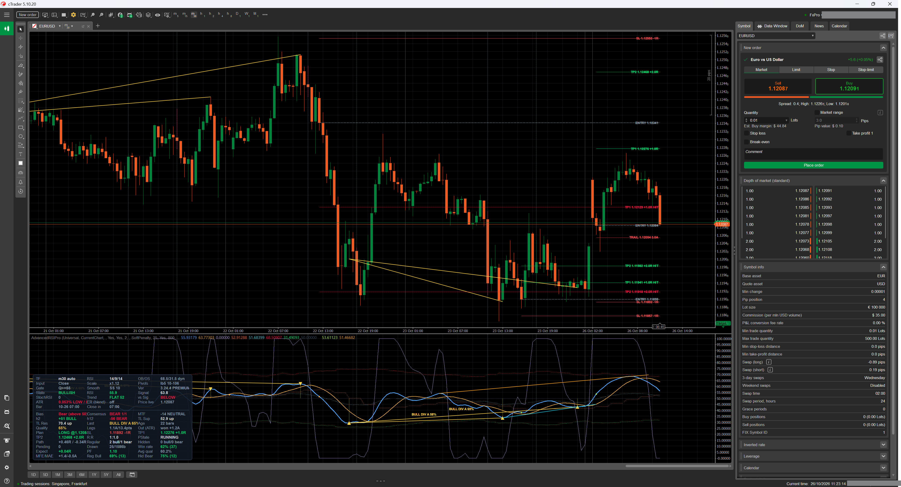
20. Reading the Pane: Every Glyph
| Glyph | Where | Meaning |
|---|---|---|
| Solid blue line | oscillator | The adaptive RSI (display scale). |
| Solid orange line | oscillator | Signal line (SMA of the RSI). |
| Pale violet line | oscillator | StochRSI (0–100 in Raw mode). |
| Dotted orange-red line | oscillator | Higher-TF RSI (first rung, closed bars only). |
| Dotted cyan line | oscillator | Trend bias (the visible trend gate). |
| Dotted red / green horizontals | oscillator | Live OB / OS bands (breathing when dynamic). |
| Dotted grey horizontal | oscillator | Midline (50 or 0). |
| Green / red dots on the line | oscillator | Bull / Bear trigger outputs (cross events). |
| “BUY” / “SELL” text + triangle | oscillator | Cross marker (wording and style configurable); tooltip carries kind, confluence, RSI/signal/stoch, UTC time. |
| Coloured diagonal between two pivot icons | oscillator (or price, mirrored) | A divergence; colour = class (or weak colour); label = class ± grade ± quality %. |
| Triangles at the pivots + thin drop lines | oscillator | The confirmed pivot pair and their exact bars. |
| Light-green / amber dots | oscillator | Bull / Bear divergence registration points (output series 11/12). |
| Cyan / orange diagonals | oscillator | RSI support / resistance trendline, extended to the live bar. |
| Break icon on a trendline | oscillator | Confirmed momentum break (closed bar), final. |
| ENTRY / SL / TP1 / TP2 horizontals with labels | price chart | A live trade plan; reached levels dotted with HIT/VOID suffixes; finished plans fully dotted. |
| BE STOP / TRAIL dotted lines | price chart | Management hints: break-even after TP1, chandelier trail for the remainder. |
| Thin grey verticals | price chart | Session markers at your UTC times. |
| The card | oscillator corner | The info panel (§10, §21). |
21. The Info Panel, Line by Line
The merged card reads as a grid of label value cells flowing through five sections. Using the live
example of Fig. 10.1:
| Cell | Example | How to read it |
|---|---|---|
TF | m30 auto | Resolved source timeframe and adaptation mode. “manual” means the scaling law is off. |
RSI | 14/9/14 | Resolved RSI / signal / stoch periods — the numbers actually in use. |
OB/OS | 68.8/31.2 dyn | Live bands; dyn = dynamic. Compare with the dotted lines — they are the same buffers. |
Input / Scale / Pivots / Q≥ / Smooth / Ver | Close / ×1.12 / lb5 10-106 / Q≥55 / SS 10 / 3.24.4 PREMIUM | Price input; period scale; pivot lookback and distance range; quality floor; SuperSmoother period; engine version. |
State | BULLISH | Primary timeframe’s state score verdict (≥+33 / ≤−33 / else FLAT). |
RSI / Signal / StochRSI | 55.7 / 63.7 / 0 | Live readings in display units. |
Trend / vs Sig | FLAT 52 / BELOW | Trend-filter verdict + bias value; whether the RSI sits above or below its signal. |
ATR | 0.054% LOW | Current ATR% of price tagged against its baseline — the volatility regime the bands and the spike gate use. |
ER (blend) | off | Regime weight when the filter bank is on. |
Session / Price live / Bar / Close in | CLOSED 7-20 UTC / 1.12069 / 10-26 07:00 / 04:14 | Session-filter state; live price; source bar open time; countdown to its close (when to expect the next confirmation). |
MTF | −14 NEUTRAL | Ladder score and verdict; per-rung cells (e.g. h2 +51 BULL) show each vote. |
TL Sup / TL Res | 52.9 up / 70.4 up | Momentum trendline values and direction; “broken” after a confirmed break. |
Bias / Consensus | Bear (above 50) / BEAR 1/1 | The trend gate’s vote with its reason, and the momentum/trend/MTF tally — the card never reads as contradictory. |
Last / Age / Legs / Out (ATR) | BULL DIV A 65% / 22 bars / 1.1A/13.4pts / won +1.2A | Newest divergence in the window: class+grade+quality; bars since confirmation; price leg in ATR / RSI leg in points; its measured outcome on the ATR ruler. |
Plan / SL / TP1 / TP2 / R:R / PState / Path | LONG @1.1208 / 1.11892 −1R / 1.12276 +1.0R / 1.12468 +2.0R / 1:1.0 / RUNNING / +0.46R/−0.34R | The newest plan in full, with lifecycle state and the realised path in R units (§13.6). |
Regular / Hidden / Pending / Drawn | 2 bull/1 bear / 0/0 / 0 / 25/1586b | Counts in the stats window; unresolved records; drawn records vs window length. |
Win rate / Expect / PF / Avg qual / MFE/MAE | 62% (37) / +0.04R / 1.10 / 60.2% / +1.4/−0.5A | The measured edge: resolved win rate with sample size, expectancy in R, profit factor, mean quality, mean excursions (§29). |
Reg Bull … Hid Bear | 69% (13) … 75% (12) | Per-family learned win rates — the buckets that feed the adaptive quality term. |
22. The Parameter Dialog & Presets
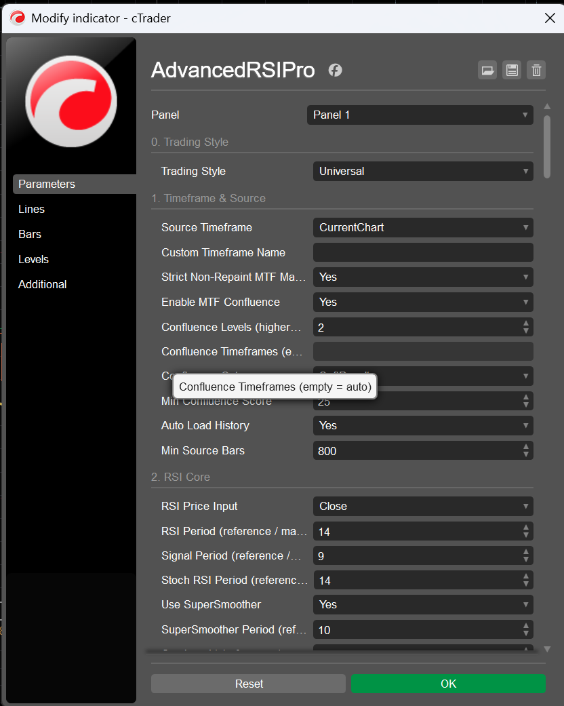
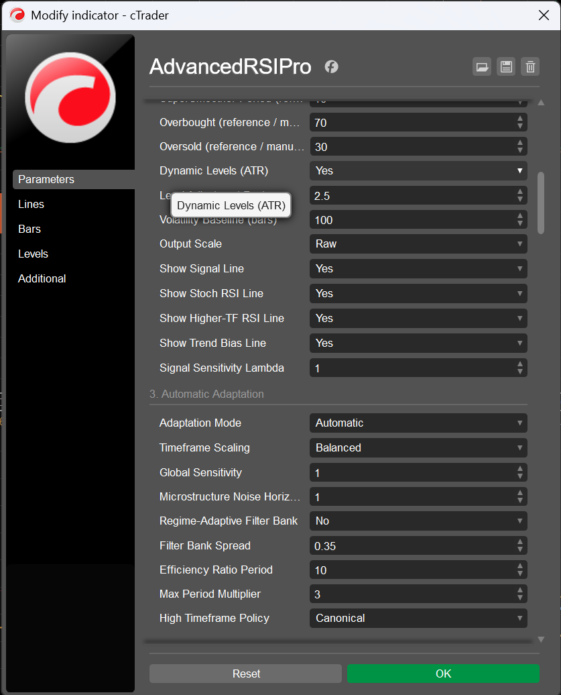
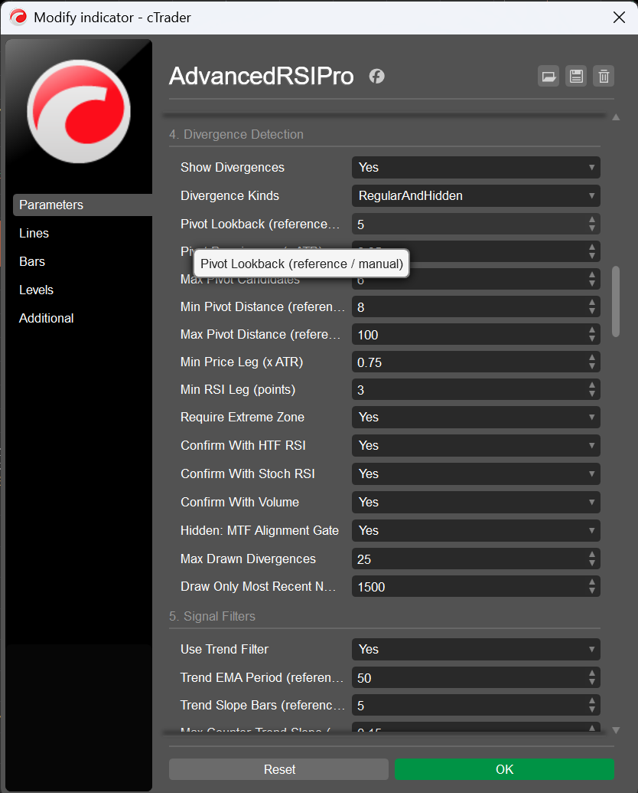
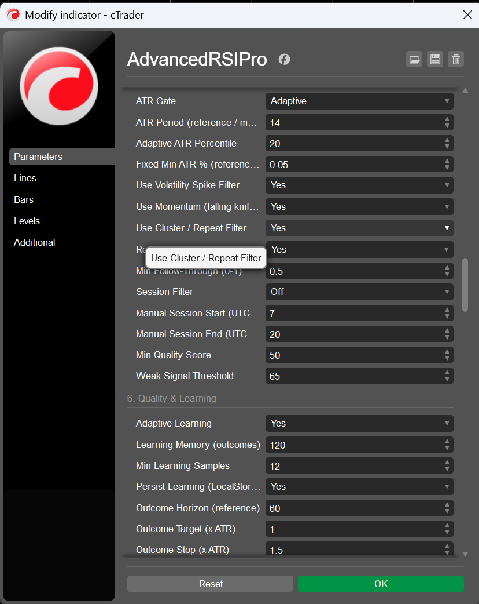
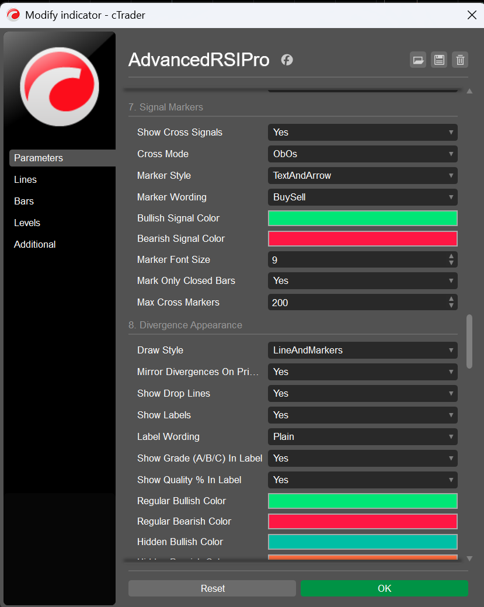
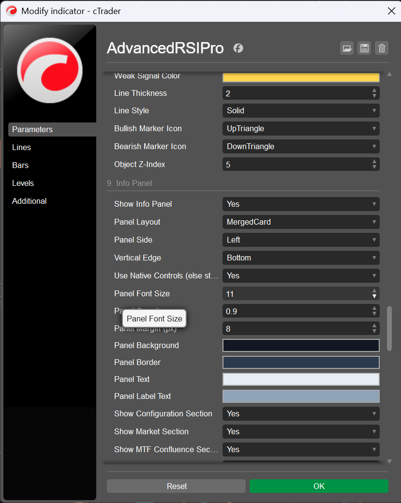
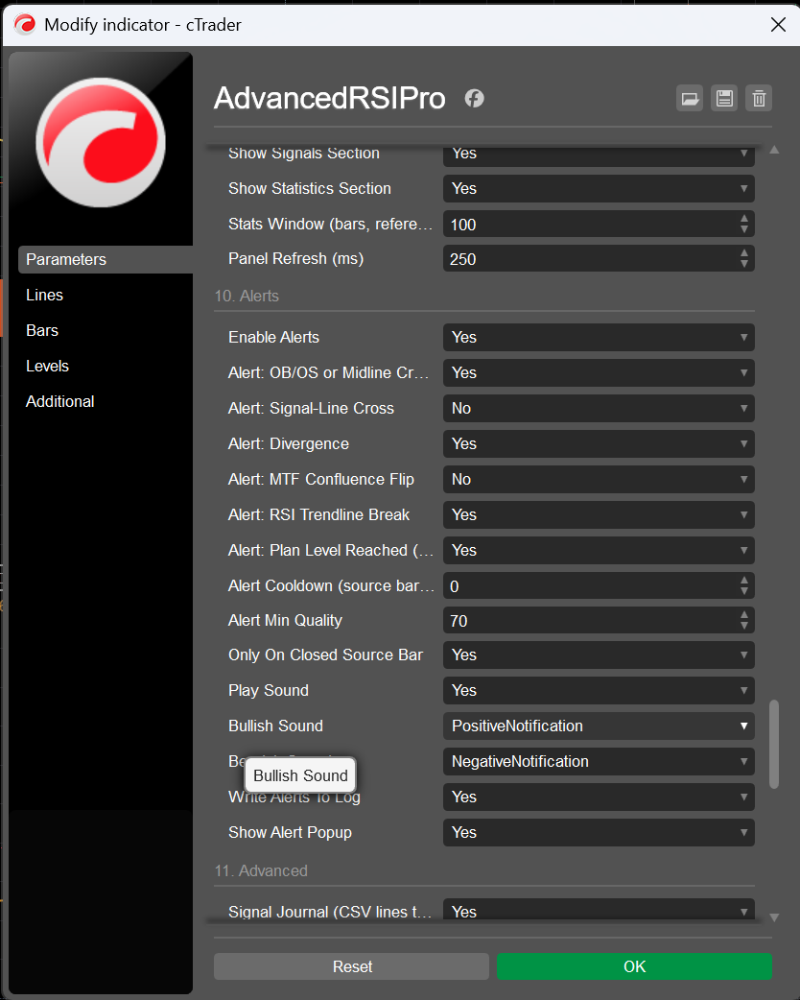
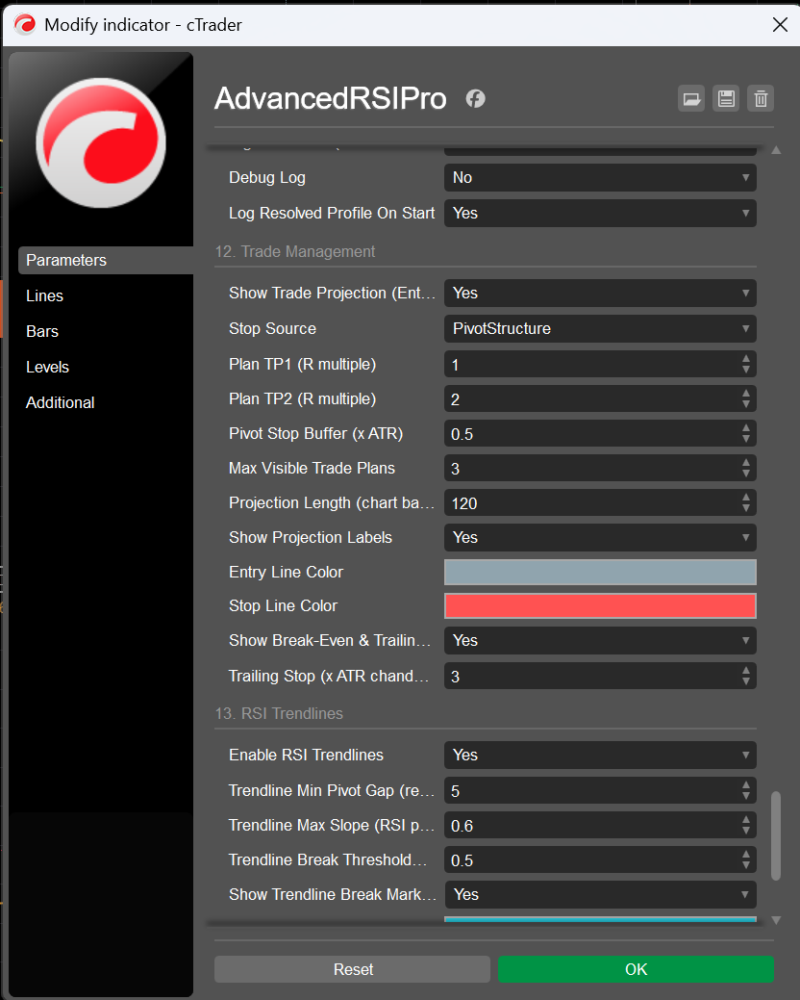
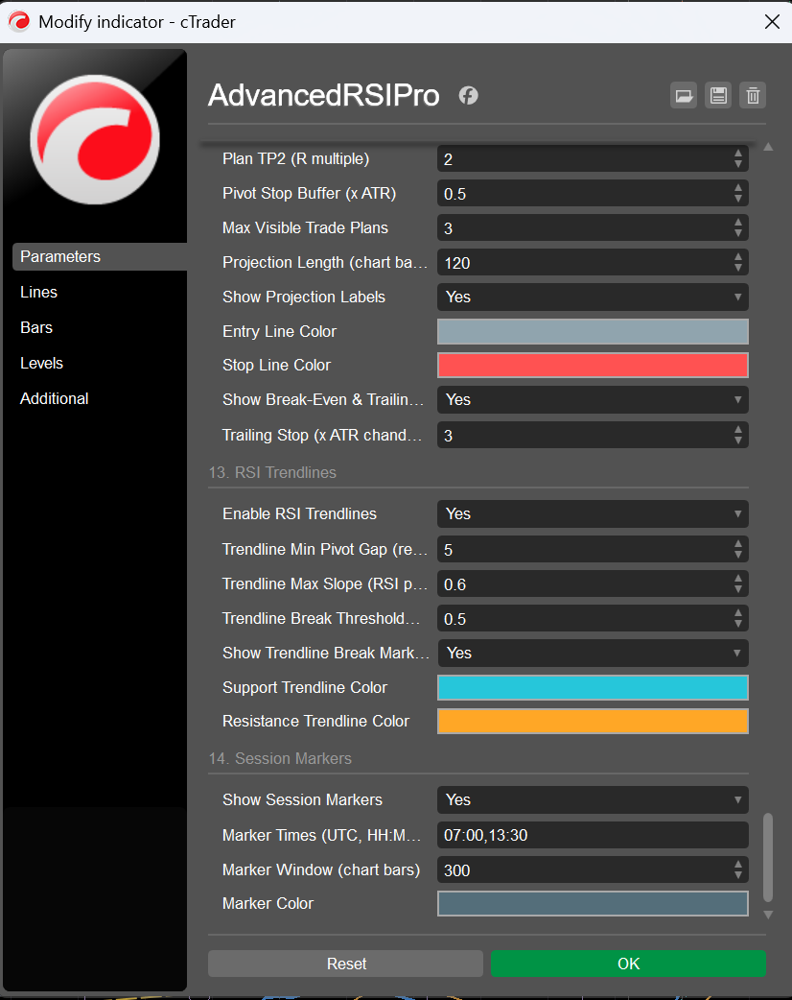
- Style first, cosmetics last. Choose the style, verify the resolved profile in the log, then adjust only user-owned fields (colours, sounds, diagnostics…). Anything the style pins will be overwritten next time you select a style.
- One change at a time. The gates interact (a tighter quality floor changes what the cluster filter sees). Change one knob, watch a week of journal lines, change the next.
- Save templates per market. cTrader templates store the full parameter set — keep one per instrument class (FX majors, crypto, indices) rather than re-tuning live.
- Use Reset deliberately.
Resetrestores factory defaults includingUniversalstyle — it does not restore your pre-preset values.
23. Price-Input Gallery — the Same Chart, Six Inputs
The six screenshots below are the same EURUSD M30 session with only RSI Price Input changed (the dialog is
left open in each shot so the selected input is visible). Watch three things across them: the smoothness of the
main line, how often it reaches the bands, and where the divergence pivots land.
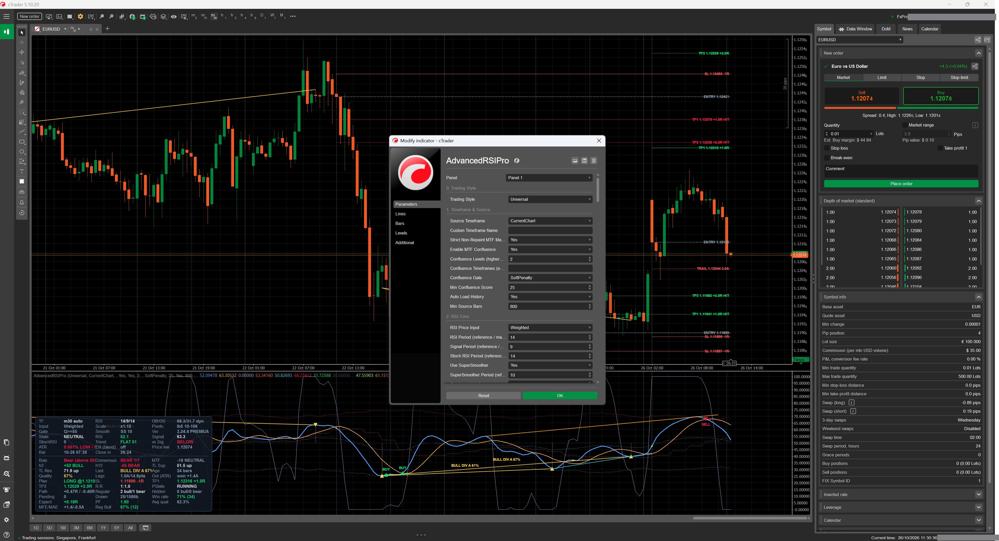
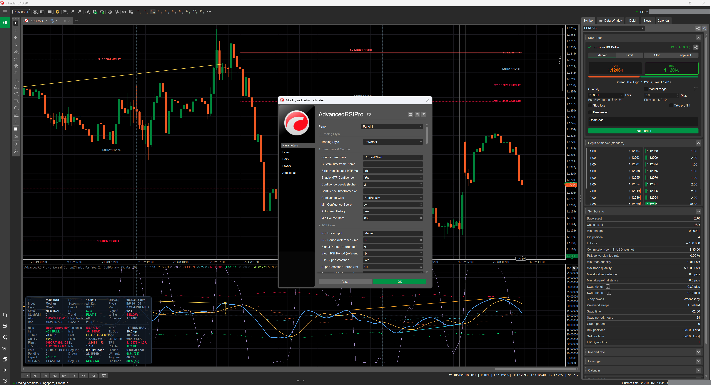
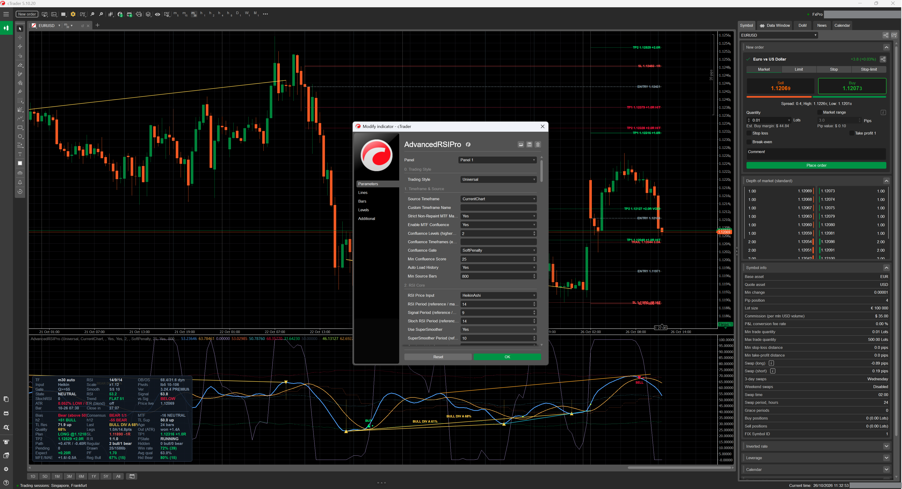
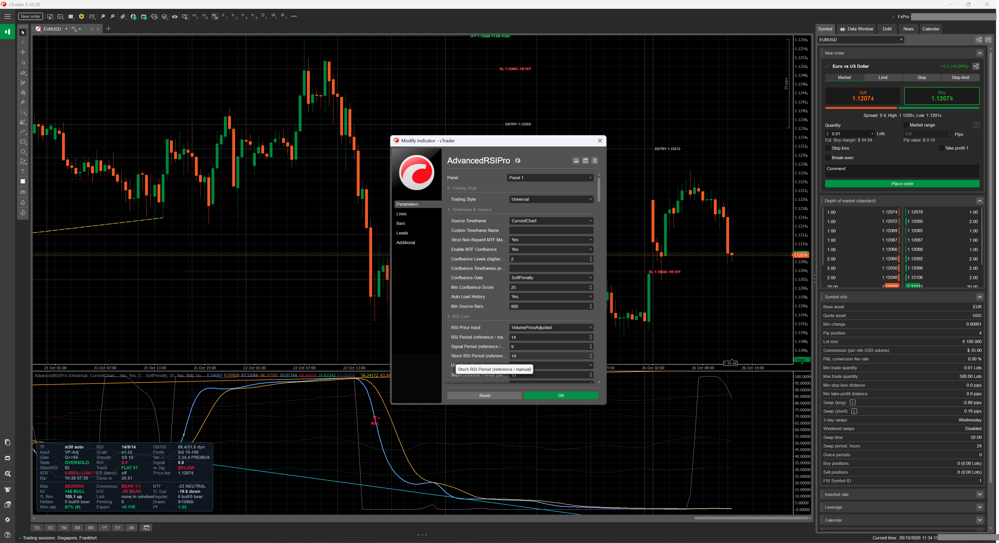
24. Trading Divergences
24.1 The anatomy of one signal
Read a divergence label left to right: BULL DIV A 65% = bullish, regular class, grade A, quality 65 %. Then verify with four glances:
- The legs. Price made a lower low while the RSI made a higher low (regular bull). The panel’s
Legscell quantifies both (e.g.1.1A/13.4pts); legs barely above the minimums are structurally thin no matter what the score says. - The grade. A = the swing between the pivots crossed the midline (a complete impulse); C = both pivots sit inside one excursion. Prefer A and B; treat C as context.
- The quality vs your distribution. Compare with the panel’s
Avg qualfor the window. A 65 in a feed whose average is 55 is a strong signal; a 65 in a feed whose average is 68 is ordinary. - The plan. The drawn Entry/SL/TP1/TP2 is the coherent ruler for the idea. If the stop distance looks absurd for your risk budget, the signal is not for your account — the engine measures, you size.
24.2 Regular vs hidden in practice
- Regular divergences are reversal patterns: they shine at the end of extended legs and fail in strong trends (the trend gate protects you from the worst of this — §27.2).
- Hidden divergences are continuation patterns: they shine in established trends’ pullbacks. Their extra protection is the hidden MTF gate: a hidden bear printed into a strongly bullish higher-timeframe flow (≤ −33 aligned) is rejected outright.
- Both share the quality machinery; your per-family win rates (panel buckets) will tell you which family actually works on your instrument — that is exactly what they are for.
24.3 Entry styles around a divergence
| Style | Entry | Trade-off |
|---|---|---|
| Confirmation entry | at the confirmation bar’s close — the plan’s ENTRY | Matches every statistic the engine reports; may pay a worse price. |
| Limit at structure | limit near the newer pivot’ level | Better price, risk of no fill; the plan’s R-multiples still apply from your fill. |
| Cross confirmation | wait for the OB/OS-exit cross in the signal’s direction (§25) | Later, but two independent engines agree. |
25. Trading Crossovers
Crosses are the engine’s timing layer; divergences are its structure layer. The classic RSI playbook
(“buy when RSI turns up out of oversold”) is exactly the OB/OS-exit family, made precise by the lambda
hysteresis: with Signal Sensitivity Lambda = 0.92 the zone state clears only after RSI has moved
0.32 points (on 70/30 bands) back through the border — most one-tick whipsaws never print a marker.
- OB/OS exit — the reversal timing signal; strongest when a divergence is recent and the MTF ladder is not opposed (the marker tooltip shows the bar’s confluence score).
- Midline — the regime signal; useful as a filter (“only longs above 50”) more than as an entry.
- Signal line — the momentum turn; the noisiest family, and the only one whose alert is off by default.
26. Multi-Timeframe Workflow
- Decide your primary. The chart timeframe is the decision timeframe; the source timeframe (if different) is the measurement timeframe. Most users keep them equal.
- Read the ladder top-down. The per-rung cells show each vote (e.g.
h2 +51 BULL,h6 −66 BEAR). A ladder in agreement (|score| ≥ 33 with all rungs signed the same way) is the cleanest backdrop for any signal. - Use the gate you actually want. SoftPenalty nudges quality; HardGate vetoes. If you cannot explain why a veto should exist on your market, stay on SoftPenalty.
- Trust the strict mapping. With the default strict mapping the ladder never shows you a higher timeframe’s in-progress bar as if it were knowledge. When you need the extra tick of freshness, switch it off consciously and accept that live display values can tick.
- Watch the flip alert. A BULL→BEAR ladder flip is a regime statement, not an entry: it tells you the backdrop under your open positions changed.
26.1 Case study: a coarser source (H8) on a finer chart
A real field configuration worth understanding: EURUSD with a custom H8 source on a finer chart (the panel
reads TF h8 auto, source bars opening at 05:00 UTC while the chart grid runs 01:00 / 05:00 / 09:00…).
Two lessons live in this one screenshot:
- Marker placement (fixed in v3.24.5). Before 3.24.5 a closed-bar marker was drawn at the first chart bar of its source bar — with an H8 source, up to 8 hours (several chart bars) before the moment the cross could be known. Live, a BUY popped into the past at the start of the very bounce that confirmed it, so the bounce was already spent when the marker appeared and any subsequent decline read as “price fell right after the BUY”. Since v3.24.5 markers land on the last chart bar overlapping the confirmed source bar — the bar that was live at the knowledge point, adjacent to the trigger output. Identity charts never changed.
- Context beats polarity. The same screenshot shows the engine’s own backdrop:
Bias BEARISH,Consensus BEAR, weekly rung-73 BEAR. Every OB/OS-exit BUY in that regime is a counter-trend timing ping — crosses carry no trend filter by design (§25). The tool was not inverted; the backdrop said “do not take these longs”, in the panel, in colour.
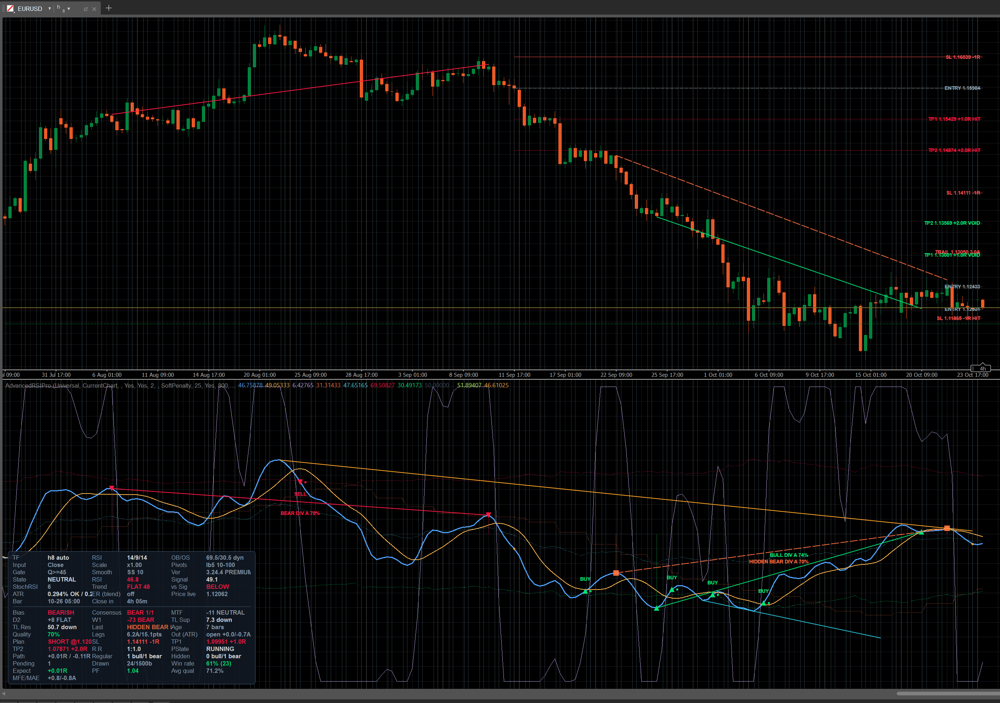
TP2 VOID, trendline rows and
the measured statistics (61 % win rate on 23 resolved outcomes). Read the backdrop cells before any cross
marker.27. Gates in Practice — Loosening and Tightening
27.1 The volatility gate family
Three gates answer “is this market tradable right now?”:
- ATR gate (
Adaptiveby default): the engine models ATR% as a log-normal process (EWMA of log-volatility with an exact West correction) and takes your percentile of that distribution as the floor.Adaptive ATR Percentile = 20means “reject signals in the quietest fifth of regimes”.Fixeduses your % directly (scaled by timeframe);Offremoves the floor. - Volatility spike filter: rejects confirmations inside a >3× baseline ATR% shock — the news bar itself.
- Falling-knife filter: rejects a bullish confirmation under a >4 ATR vertical drop (and the mirror for bears) within the last 2×Trend Slope Bars — no catching knives, no fading parachutes.
Loosen (lower percentile, disable spike/knife) only if Debug Log shows genuine signals dying in conditions you understand and accept. Tighten (higher percentile) if your journal shows losses concentrated in dead or shocked sessions.
27.2 The trend gate
The slope of the resolved trend EMA, in ATR per bar, decides how much counter-trend pain a signal may carry:
hidden divergences are rejected when the trend runs against them beyond Max Counter-Trend Slope; regular
divergences only at 3× that limit (“too strong to fade”). Between the limits the gate does not
reject — it scores: alignment feeds 10 % of the quality score. The cyan bias line is this gate drawn,
so you can watch it tighten and relax with the market.
27.3 The pattern gates
- Cluster filter: no second same-direction signal within Min Pivot Distance bars and 1 ATR of price of a previous one — prevents pyramiding into one bottom at three qualities.
- Follow-through (off by default): demands the confirmation close already inside the pivot→confirmation range in the signal’s direction. Turning it on makes the engine later and pickier — a legitimate scalping filter, a bad idea on slow timeframes.
- Session filter: trades only inside market hours (symbol calendar in Auto, or your UTC window). The
panel’s
Sessioncell shows the current verdict.
28. Alerts Workflow
- Start minimal. Divergence + trendline break + plan levels (the defaults) cover structure, momentum shift and lifecycle. Add cross alerts only if you actually act on crosses.
- Set the cooldown from your bar rhythm. On M5 with a 20-bar cooldown you get at most one bullish ring per 100 minutes; on D1 the same number is a month. Cooldown is per direction, so it never masks the opposite side.
- Keep
Only On Closed Source Baron unless your execution style is explicitly intra-bar (Scalping preset). A ringing alert that can un-ring itself is worse than no alert. - Route the log lines. With
Write Alerts To Logon, every ring is also a text line — the audit trail that lets you reconcile alerts against markers and journal rows afterwards.
29. Reading Your Own Statistics
The statistics section is the product’s report card on your feed. Definitions, exactly as computed:
| Cell | Definition |
|---|---|
Win rate | resolved WINs / (WINs + LOSSes) over the stats window, sample in brackets. EXPIRED outcomes are excluded from the ratio but counted in the buckets’ Expired counter. |
Expect | expectancy in R of the plan ruler: mean of (realised path, capped at TP2, floored at −1R) over resolved plans — the number that answers “what was one plan worth on average?”. |
PF | profit factor: gross favourable R / gross adverse R over the same set. |
Avg qual | mean quality of all registered divergences in the window — your personal calibration reference (§6.6). |
MFE/MAE | mean best / worst excursion in ATR units on the ATR ruler — whether wins run further than losses. |
| bucket rows | per-family learned win rates with samples — the adaptive term’s raw material. |
30. Timeframe & Instrument Guide
| Context | Recommended starting point |
|---|---|
| M1–M5 FX / crypto scalping | Style Scalping; source = chart; lambda 0.92; keep the session filter (it exists exactly for the dead hours); expect live-bar markers. |
| M15–H1 intraday | Style Swing; defaults; SoftPenalty gate with 2 rungs; closed bars everywhere. |
| H4–D1 swing | Style Swing or Position; widen Draw Only Most Recent N Bars if you review months of history; Position’s hard gate earns its keep here. |
| D1–W1 position | Style Position; regular divergences only; 3-rung ladder; expect few signals — the statistics window will be sparse by nature. |
| Volume-less feeds (some CFD / synthetic symbols) | Turn Confirm With Volume off explicitly: the vote degrades to unknown gracefully, but an explicit off documents your intent. |
| Tick / Renko / Range sources | Supported via the sampled-median bar span; verify the resolved span in the start-up log before trusting the profile, and prefer named timeframes for confluence rungs. |
SECTION 3 — TIPS
31. The Golden Rules
- Pick the style before the parameters. The preset is 134 decisions made coherently; hand-tuning from Universal is rebuilding that coherence by hand.
- Read the resolved profile, not the dialog. The numbers that matter are in the start-up log and the panel’s config section — the dialog shows references.
- One truth per pane. The dotted bands, the zone gates, the MTF votes and the panel all read the same live bands. If something looks contradictory, one of your toggles changed a layer’s visibility, not its data (§37).
- Quality is a distribution, not a threshold. Calibrate against your own
Avg qual; the factory 50/65/70 trio is a starting shape, not a law. - Let the engine measure itself. Keep learning and the journal on until you have a reason to turn them off; the statistics are the only opinion in this product that is backed by your own data.
- Plans are rulers, not orders. Size positions from your account risk; the plan only makes the risk coherent and measurable.
- Never judge a configuration on fewer than ~100 resolved outcomes (§29).
- When in doubt, Debug Log. Every skipped candidate has a named reason; the engine never silently ignores anything.
32. Recommended Presets by Trading Style
32.1 Scalping (M1–M5)
BarCount scaling with HorizonMatched policy and sensitivity 1.3 keeps windows short in bar terms; zones 68/32 with
Level Factor 3.0 breathe aggressively; lambda 0.92 filters border noise; both cross families mark live
(Mark Only Closed Bars = No) for speed; the session filter (Auto) keeps you out of dead hours; plans are
short (0.8R / 1.5R, 80-bar projection) with 200-outcome memory so the buckets track the current regime. Alerts on
closed bars off, cooldown 0 — speed over serenity; accept the churn consciously.
32.2 Swing (M15–H4)
The canonical reading: Balanced scaling, Canonical policy, 14/9/14 references and 70/30 zones as scaling anchors; closed-bar confirmation everywhere; SoftPenalty gate, Min Confluence 35; 1R/2R plans over pivot-structure stops; 3-bar alert cooldown. This is the configuration the screenshots in this manual show unless stated otherwise.
32.3 Position (D1–W1)
TimeHorizon scaling with HorizonMatched policy and sensitivity 0.85; regular divergences only; HardGate at Min Confluence 45 with three rungs; wide zones 75/25; quality floor 65 / alert 82 — few signals, each heavily vetted; no cross markers and no session markers (on daily bars they are noise); 1.5R/3R plans with 240-bar projections and a 4 ATR chandelier trail; divergence labels in Full wording with grades shown, because at this frequency you read every one of them.
32.4 Universal
The neutral baseline: factory defaults, Balanced/Canonical, everything user-owned. The right choice while learning the engine on a demo chart — and the wrong choice for a live account that could run a preset instead.
32.5 Useful manual overlays on any style
- Quiet instrument: lower
Adaptive ATR Percentile(10–15) or switch the ATR gate to Off; raiseLevel Adjustment Factorso the bands contract more in calm regimes. - Violent instrument (crypto weekends, event stocks): raise
Pivot Prominence(0.5–0.8), keep the spike and knife filters on, and widenPivot Stop Buffer. - Review-heavy workflow: raise
Max Drawn Divergencesand the draw window; enableMirror Divergences On Price Chart; set label wording to Full with grades. - Minimal pane: markers-only draw style, panel = SignalsCardOnly, session markers off.
32.6 What the styles pin — the full pinned surface
Adaptation & scaling (mode, scaling, sensitivity, noise horizon, filter bank, spread, ER period, multiplier, HTF policy) · timeframe & source (strict mapping, confluence on/levels/list/gate/min score, auto-load, min bars) · RSI core (input, all periods, bands, dynamic levels & factor, lambda, output scale, four display toggles) · divergence detection (kinds, prominence, candidates, legs, zone, three confirmations, hidden MTF gate, draw caps) · signal filters (trend filter & limit, ATR gate & percentile, spike / knife / cluster, follow-through pair, session filter & hours, quality floors) · learning (on, memory, min samples, persist, outcome target/stop) · markers (show, mode, style, wording, closed-bar, cap) · trade management (show, stop source, TP1/TP2, buffer, max plans, length, labels, hints, trail) · trendlines (on, break threshold, markers, alerts) · session markers (show) · journal (on) · divergence appearance (draw style, mirror, drop lines, labels, grade/quality toggles, thickness) · panel (show, layout, side, edge, controls, font, opacity, margin, five section toggles, refresh) · alerts (enable, six families, closed-bar, sound on, log, popup) · plus all scaling references (RSI/signal/stoch/smoother periods, bands, pivot lookback & distances, ATR period, trend EMA & slope bars, outcome horizon, level baseline, min ATR %, multiplier, draw & stats windows, trendline gap & slope, cooldown, stop buffer).
32.7 What stays yours in every style (the 29 user-owned parameters)
Source: Source Timeframe, Custom Timeframe Name ·
cross markers: Bullish / Bearish Signal Color, Marker Font Size ·
divergence look: Regular Bullish / Regular Bearish / Hidden Bullish / Hidden Bearish / Weak Signal Color,
Line Style, Bullish / Bearish Marker Icon, Object Z-Index ·
panel: Background, Border, Text, Label Text ·
alerts: Bullish / Bearish Sound ·
diagnostics: Debug Log, Log Resolved Profile On Start ·
plans: Entry Line Color, Stop Line Color ·
trendlines: Support / Resistance Color ·
session markers: Marker Times, Marker Window, Marker Color — plus Trading Style itself.
Everything behavioural is pinned by the preset; what remains is presentation, colours, wording, sounds, diagnostics
and the choice of source timeframe.
33. What NOT to Do
- Do not enable the regime-adaptive filter bank “because it exists”. It redefines the main line; every statistic you already collected describes a different oscillator.
- Do not set Min Quality Score to 0 to “see everything”. You will see everything, including the candidates the engine proved worthless; your eyes will recalibrate to noise. Use Debug Log instead.
- Do not mix rulers. The ATR ruler grades outcomes; the R ruler draws plans. Comparing a panel win rate against plan HIT counts is comparing two instruments.
- Do not trade a STALE plan. STALE means the idea did not develop within four horizons — it is information, not an opportunity.
- Do not stack two instances on the same chart with different styles and average their opinions; run them on separate charts and let the journals arbitrate.
- Do not disable
Strict Non-Repaint MTF Mappingto get earlier alerts — you would be buying freshness with look-ahead, the exact disease the engine is built to cure.
34. Performance & Chart Hygiene
- The engine is incremental: every kernel updates only new or revised bars; the SMA carries a running-sum cache with periodic exact rebaselining. Normal tick load is a handful of bar updates.
- Heavy operations (full replays) happen on start-up, on history reloads and on timeframe changes — expect a brief pause there, not during ticking.
- Draw caps are real budgets:
Max Drawn Divergences,Max Cross Markers,Max Visible Trade Plans, the session-marker window and the 1500-object marker cap. Raising all of them to maximum on a year of M1 history is the only way to make this product visibly slow — and it also makes the pane unreadable. - Panel refresh below ~100 ms with native controls buys nothing: the panel rebuilds only when dirty.
- Keep
Persist Learningon: restoring four buckets is cheaper than re-learning them, and the file is a few dozen bytes.
35. Verifying the Non-Repaint Claim Yourself
- Freeze a moment. On a demo chart, note the current bar time and take a screenshot of the oscillator pane and the price pane.
- Scroll away and back. Switch to another symbol and return (or detach/reattach the indicator). The history pass replays: every glyph that was on confirmed bars must reappear identically — same bars, same labels, same qualities.
- Bar-replay test. If your platform offers bar replay / playback, step through the bar where a divergence confirmed: the pattern must appear exactly at its confirmation bar, never earlier, and must not move afterwards.
- Journal cross-check. Copy the
ARP-JOURNALlines into a spreadsheet; the confirmation timestamps are the bars where glyphs appeared. A glyph whose bar is older than its journal line’s confirmation time would be a repaint — you will find none. - Live-bar discipline. With
Mark Only Closed Barson, watch the forming bar: cross markers and divergence labels may preview nothing at all until close — that absence is the guarantee working. (Scalping’s live mode is the documented exception.)
36. FAQ
| Question | Answer |
|---|---|
| Why did a divergence appear several bars after the pivot? | Because the pivot needed Pivot Lookback bars to confirm, and the pattern needed its second pivot confirmed too. The earliest legal moment is the confirmation bar — that is non-repainting, not lag. |
| Why do my OB/OS lines move slightly over time? | They are dynamic bands breathing with ATR% (§5.6). The values already printed on confirmed bars do not move; only the live end updates. Switch Dynamic Levels off for fixed bands. |
| Why is the higher-TF line flat for a while? | Strict mapping holds each closed rung bar until the next one closes — a staircase is the honest shape. |
| Why no alerts after a restart? | The history rescan is silent by design; only live events alert. Your markers and journal history still refill. |
| Why does the panel show “collecting” for win rate? | The buckets have fewer resolved outcomes than Min Learning Samples, or learning is off. |
| Can I use this as a cBot signal source? | Yes — consume the trigger / divergence output series (§12.2). Respect the closed-bar rule: read Count-2 for confirmed values. |
| Does the indicator trade or access my account? | No. AccessRights.None; no orders, no account reads, no network. |
| Where is my learning data stored? | cTrader LocalStorage, scope = indicator type (shared across charts of the same symbol class by design, so statistics accumulate faster). Delete it via the platform’s storage tools if you want a cold start. |
| Two charts, same style, different results? | Check the resolved source: different chart timeframes resolve different profiles unless the style pins otherwise — and the learning buckets are per indicator type, not per chart. The start-up log shows both. |
| What changed between 2.x and 3.x? | Corrected OB/OS polarity, real dynamic levels, the trade lifecycle, RSI trendlines, session markers, the CSV journal, professional statistics and four style presets — see the revision callout at the top of this manual. |
37. Troubleshooting
| Symptom | Cause / fix |
|---|---|
| Hundreds of alert / journal lines and sounds the moment I attach the indicator | Builds before v3.24.6 could leak the streamed history backlog through as “live” events on a deep-chart attach. Update to v3.24.7: the start-up pass completes only when the feed has caught up to the clock (within ~10 bar spans), and the rescan is silent by contract (§11.3). |
Build warning CGEN001: Config file not found | The new cTrader Algo editor (5.9+) expects a config.json metadata file next to the .csproj; projects created before that format (or assembled by hand) do not have one. Harmless for C# algos — the metadata comes from the code attributes and the .algo builds fine. To silence it, create config.json in the project folder (the one holding AdvancedRSIPro.csproj) with: { "AccessRights": "None", "IsOverlay": false, "TimeZone": "UTC" } — these values match the indicator’s [Indicator] attribute — and rebuild. |
| Nothing drawn on a fresh chart | Warm-up: the resolved windows need history. Check the start-up log’s warm-up estimate and the history warning; enable Auto Load History / raise Min Source Bars. |
| Divergences stopped appearing | Read Debug Log: a gate is rejecting (quiet regime → ATR gate; strong trend → trend gate; news → spike filter). Loosen deliberately (§27) or accept the discipline. |
| “Every BUY cross loses on my chart” | Crosses are context-free timing pings: in a strong downtrend every oversold-exit BUY is counter-trend and will mostly fail — check Bias / Consensus / MTF before acting (§25, case study §26.1). On charts finer than the source, make sure you run v3.24.5+: older builds placed closed-bar markers at the source bar’s open, hours before the signal could be known. |
| Markers but no alerts (or vice versa) | Markers follow Cross Mode; alerts follow their own toggles and the closed-bar / freshness / cooldown rules (§11.3). Align the two consciously. |
| Panel missing sections | The five section toggles in group 9; a fully-empty selection hides the body. Also check Show Info Panel. |
| Plan disappeared when I scrolled left | Visible-plan budget and chart window: plans whose confirm bar leaves the window are un-drawn and retried on return (§13.3). The registry and statistics keep them. |
| Session markers missing inside a wide bar | They are occurrence-complete by design; if none appear at all, check the parsed count in the start-up log (“on but no valid times parsed” means the list did not parse). |
| Statistics look wrong after a long disconnect | Outcomes resolve chronologically over the gap on the first sweep — that is correct behaviour; only live events alert and journal, so the log stays quiet while the statistics catch up. |
| Win rate frozen at an old value | Persist Learning restored a saturated bucket; raise Learning Memory or clear storage for a cold start. |
38. Glossary
| Term | Meaning in this product |
|---|---|
| ATR ruler | The outcome-measuring ruler: target/stop as multiples of the entry bar’s ATR. |
| Aligned score | The MTF confluence score signed by the signal direction (+ for bulls, − for bears). |
| Confirmation bar | The first closed source bar at which a pivot / pattern / break can be known; the earliest legal action point. |
| Dynamic bands | The volatility-breathing OB/OS levels (§5.6). |
| Grade (A/B/C) | Structural completeness of a divergence’s intermediate swing (§6.4). |
| Hybrid closure | The closed-bar rule for irregular calendars: closed iff min(nominal close, successor open) ≤ asOf. |
| Lambda hysteresis | The exit band inside the OB/OS zones controlled by Signal Sensitivity Lambda. |
| MFE / MAE | Maximum favourable / adverse excursion after entry, in ATR (statistics) or R (plan path) units. |
| Plan R | The plan’s own risk unit: |entry − stop|. |
| Prominence | A pivot’stand-out distance from its neighbours’ RSI extremes, in ATR-price units. |
| Quality score | The 12-component 0–100 weighted mean grading each divergence (§6.6). |
| Resolved profile | The adaptive engine’s output: every effective window/threshold for one timeframe. |
| Rung | One higher timeframe of the confluence ladder, with its own profile and pipeline. |
| State score | A timeframe’s ±100 vote: position + momentum + signal + exhaustion (§9.3). |
| Watermark | An engine’s “scanned up to here” index, guaranteeing exactly-once evaluation. |
APPENDICES
Appendix A — Screenshot Index & Naming
The offline archive keeps manual.html next to its images/ folder. Naming convention:
0x_ = workspace & dialogs, 1x_ = dialogs (cont.) & price-input gallery,
2x_ = feature close-ups, 3x_ = case studies, plus the vector assets.
| File | Content | Used in |
|---|---|---|
images/banner.svg | Product banner (vector, gold edition) | cover |
images/favicon.svg | Favicon / apple-touch icon | head |
images/icon_text.svg | Product icon with wordmark (hub card) | hub |
images/01_workspace_overview.png | Full workspace: price plans, trendlines, oscillator, divergences, panel | §19, §23.1 |
images/02_parameter_dialog.png | Parameter dialog, groups 0–2 | §22 (Fig. 22.1) |
images/03_info_panel_closeup.png | Merged info card, live values | §10.2 |
images/04_dialog_adaptation.png | Dialog: group 2 tail + group 3 (Automatic Adaptation) | §22 (Fig. 22.2) |
images/05_dialog_divergence.png | Dialog: group 4 (Divergence Detection) | §22 (Fig. 22.3) |
images/06_dialog_filters.png | Dialog: group 5 (Signal Filters) | §22 (Fig. 22.4) |
images/07_dialog_markers.png | Dialog: groups 6–7 (Quality & Learning, Signal Markers) | §22 (Fig. 22.5) |
images/08_dialog_appearance.png | Dialog: group 8 (Divergence Appearance) | §22 (Fig. 22.6) |
images/09_dialog_panel_alerts.png | Dialog: groups 9–10 (Info Panel tail, Alerts) | §22 (Fig. 22.7) |
images/10_dialog_advanced_trade.png | Dialog: groups 11–12 (Advanced, Trade Management) | §22 (Fig. 22.8) |
images/11_dialog_trade_sessions.png | Dialog: group 12 tail + 13–14 (Trendlines, Session Markers) | §22 (Fig. 22.9) |
images/10_input_typical.png | Price input = Typical, with dialog | §5.2, §23.2 |
images/11_input_weighted.png | Price input = Weighted, with dialog | §23.3 |
images/12_input_median.png | Price input = Median, with dialog | §23.4 |
images/13_input_heikinashi.png | Price input = HeikinAshi, with dialog | §23.5 |
images/14_input_volumeprice.png | Price input = VolumePriceAdjusted, with dialog | §23.6 |
images/20_plan_closeup.png | Trade plan close-up: HIT/VOID lifecycle, TRAIL hint, TL break | §13 (Fig. 13.1) |
images/21_price_divergences.png | Price chart: session markers, mirrored divergences | §15 (Fig. 15.1) |
images/22_bands_closeup.png | Dynamic OB/OS bands close-up | §5.6 (Fig. 5.2) |
images/23_hidden_bear_closeup.png | Hidden bearish divergence in the oscillator | §6 (Fig. 6.1) |
images/30_h8_coarse_source.png | Case study: custom H8 source on a finer chart | §26.1 (Fig. 26.1) |
images/31_log_excerpt.png | Platform log: profile dump + ARP-* journal streams (rendered from a real session log) | §16.1 (Fig. 16.1) |
images/: workspace and panel, the full parameter
dialog (all fifteen groups), the six-input price gallery, plan / divergence / bands close-ups, the H8 case study and
the log excerpt. Nothing is pending for the current revision.
Appendix B — Source-Code Audit (v3.24.7, 2026-10)
Advanced RSI Pro has passed fourteen independent audit rounds (v3.3 → v3.24.4). Each round re-read the whole
file and re-verified the engine against oracles written from the documented semantics, not from the code under
test — including an independent numerical re-implementation of all six MA kernels and of the full RSI pipeline in
a second language, differential replays of every state machine against brute-force chronological oracles, and a
whole-file compile against a clean-room mock built strictly from the published cAlgo.API reference
(zero errors, zero warnings at maximum warning level). Highlights a user can translate into trust:
- Kernels: all six MA types (Simple, Weighted, Exponential, Wilder, Triangular, SuperSmoother) and the SMA running-sum cache proven incremental = one-shot under one-shot / bar-by-bar / chunked / revise-below-cache / shrink-regrow schedules, NaN densities up to 20 %, including both 1024-update rebaseline crossings.
- Pipeline: the complete chain (all six price inputs including the volume-price builder and its memo, Wilder seed-and-smooth, ER blend, SuperSmoother clamp, signal SMA, StochRSI, TR/ATR%/baseline, dynamic bands, zone hysteresis, both side-state machines) differenced against an independently written reference over randomised configurations with custom and non-straddling bands — zero drift on every frozen bar.
- Mapping: all four timeframe-mapping families against the hybrid-closure oracle over regular, weekend,
Monthly and holiday-shortened calendars × three
GetIndexByTimeroundings × strict / non-strict — tens of thousands of probes, exact. - Lifecycle: outcome and plan engines vs chronological oracles over randomised paths including same-bar
double touches, degenerate TP1 = TP2, invalid entries and near-
int.MaxValueindices (no fabricated instant EXPIRED / STALE). - Learning: decay vs ensemble Monte-Carlo (convergence to the resolved win rate within 4 SEM, no 50/50 absorbing state), persistence round-trip and corrupt-file rejection.
- Contracts: all 164 parameters verified inside their declared ranges and on their step grids; all three presets verified to write the identical 135-assignment set; every division, cast and index+window addition traced to a guarded operand; culture-invariant formatting on every numeric surface.
The v3.24.4 round fixed one latent defect (a corrupt infinite endpoint quote could poison the Kaufman ER of the regime filter bank — a bank that ships OFF by default and OFF in every preset) and re-verified everything else clean. Behaviour on every finite quote is bit-identical to v3.24.3.
v3.24.7 tightens the v3.24.6 catch-up window. A field log (EURUSD h1 attach) showed v3.24.6 had stopped the
journal / ARP flood but still leaked ~5 days of cross and trendline alerts: the grace of span + max(5 days,
2 spans) let the flag flip while a streamed leading bar was up to five days behind the clock. The window is now
max(10 × span, 15 min), bounding any streaming leak to roughly the alert freshness window on every
timeframe while a forming Monthly bar (age ≤ 31 days) and a daily bar after a weekend or multi-day holiday
(age ≤ ~5 days) still read as caught up; an intraday source over a closed market defers until the reopen, which
emits no events to miss. Re-verified by execution across fourteen attach scenarios (live intraday / Monthly / Weekly,
daily after a 3-day weekend and a 5-day holiday, streamed backlogs at 12 h / 5 d / 20 d, an intraday weekend, and the
10-span boundary), compiled with zero warnings.
v3.24.6 closes a field-reported start-up defect found through a real session log: when the platform streams the history in incrementally after the attach, the first-pass flag used to flip on the partially loaded series and the whole backlog then processed as “live” (399 log lines — alerts, journal rows and sounds — in 1.2 seconds on a fresh EURUSD m15 attach). The pass now completes only when the source series has caught up to the real clock (span + max(5 days, 2 spans) window); the deferral was verified harmless for drawing, learning seeding, panel and statistics, and correct across seven attach scenarios (live, streaming backlog, weekend, multi-day holiday, Monthly forming bar, Monthly backlog, clock skew), compiled with zero warnings.
v3.24.5 adds one field-driven placement fix and no engine changes: closed-bar
cross markers and trendline-break markers move from the source bar’s open edge to the last chart bar
overlapping the confirmed source bar (the new SignalPlacementChartIndex helper, hybrid-closure
capped). Identity and finer mappings are bit-identical by construction — the helper degenerates to
SourceToChartIndex — and were re-verified by execution against a five-scenario differential
(coarser phase-shifted source, identity, finer source, irregular short-bar calendar, unknown-span fallback) with a
whole-file brace / paren / bracket balance sweep and all four version surfaces updated together. Signal detection,
polarity, alerts, journal and outcome measurement are untouched.
Advanced RSI Pro 3.24.7 “Premium” · AURUM QUANT · manual revision 2026-10 · © 2026. Documentation describes tooling, not investment advice.